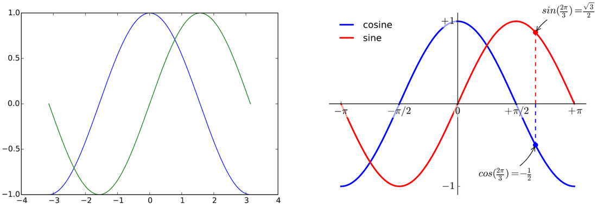
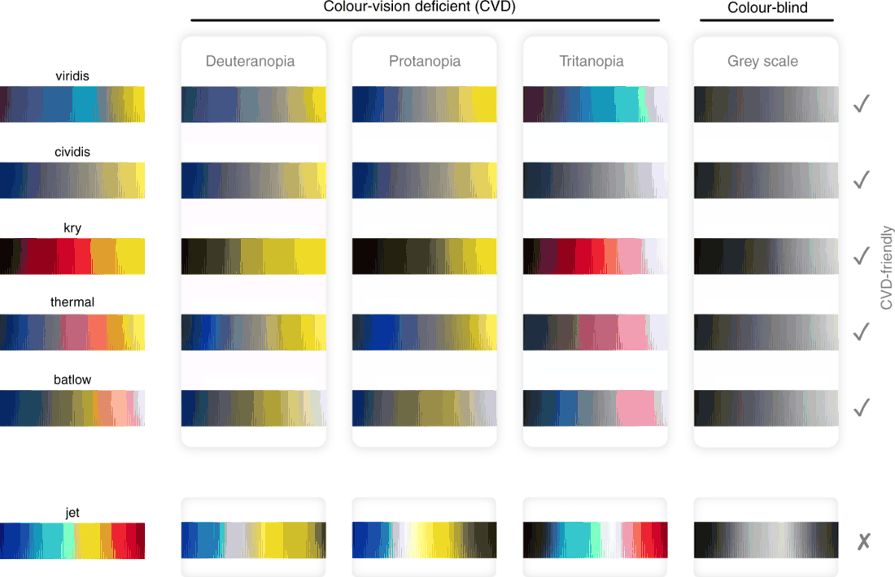
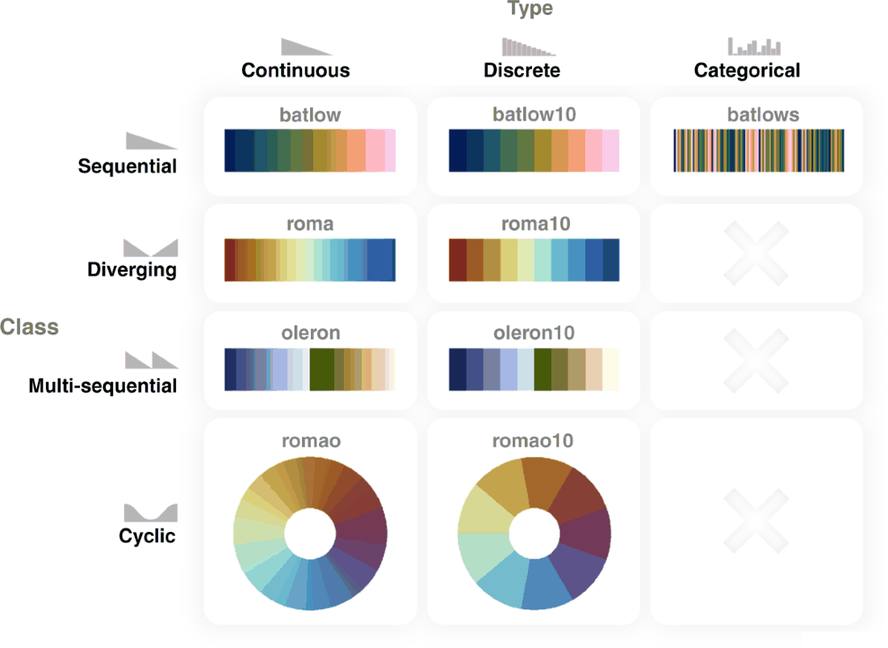
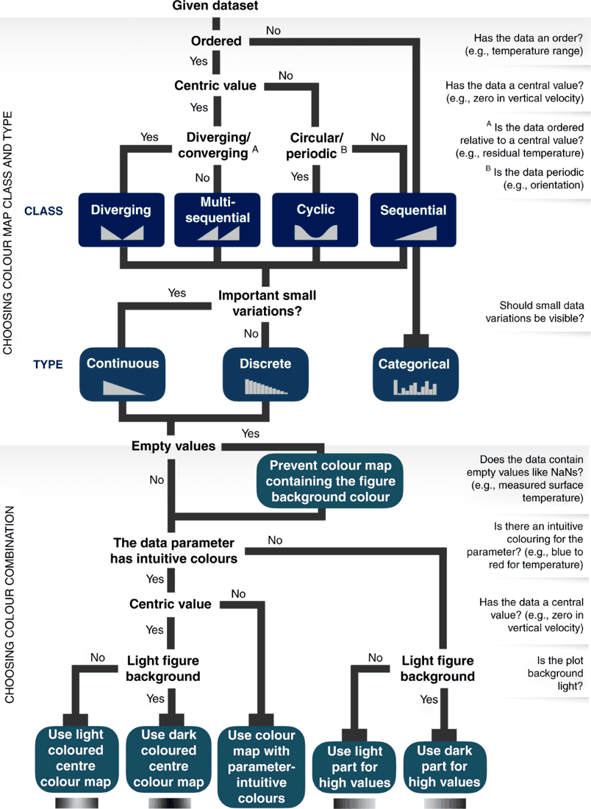

NRB 2.0 · R05 · Three-paper reading room
Offline reading room: three actual papers
The following are readable source texts with original figure content, not summaries. Source identifiers P1–P3 are local to this task. Bibliographies inside each paper retain their original numbering. All required reading is embedded. Internet access is unnecessary. Source scope and absent supplementary material are stated for each paper; do not infer that linked references or absent code have been supplied.
P1: Beyond Bar and Line Graphs: Time for a New Data Presentation Paradigm (2015)
P1: Beyond Bar and Line Graphs: Time for a New Data Presentation Paradigm
Tracey L. Weissgerber, Natasa M. Milic, Stacey J. Winham, Vesna D. Garovic (2015). PLOS Biology 13(4): e1002128. DOI: 10.1371/journal.pbio.1002128.
Original: https://journals.plos.org/plosbiology/article?id=10.1371/journal.pbio.1002128. License: CC BY 4.0. Retrieved 2026-10-17 UTC. Display transformation: extracted and reformatted text; figures downsampled to at most 1100 px and palette-quantized to 128 colours, with original scientific content and captions retained. These display copies are for close reading; use the source data for quantitative analysis.
Complete main article text, bibliography and all 3 main figures; complete S1 Text DOCX as readable extraction. Other SI is not supplied.
Figures in scientific publications are critically important because they often show the data supporting key findings. Our systematic review of research articles published in top physiology journals (n = 703) suggests that, as scientists, we urgently need to change our practices for presenting continuous data in small sample size studies. Papers rarely included scatterplots, box plots, and histograms that allow readers to critically evaluate continuous data. Most papers presented continuous data in bar and line graphs. This is problematic, as many different data distributions can lead to the same bar or line graph. The full data may suggest different conclusions from the summary statistics. We recommend training investigators in data presentation, encouraging a more complete presentation of data, and changing journal editorial policies. Investigators can quickly make univariate scatterplots for small sample size studies using our Excel templates.
A systematic review of research articles reveals widespread poor practice in the presentation of continuous data. The authors recommend training for investigators and supply templates for easy use.
Introduction
Data presentation is the foundation of our collective scientific knowledge, as readers’ understanding of a dataset is generally limited to what the authors present in their publications. Figures are critically important because they often show the data that support key findings. However, studies of the Journal of the American Medical Association [1] and the British Medical Journal [2] provide compelling evidence that fundamental changes in the types of figures that scientists use are needed. Authors generally use figures to present summary statistics, instead of providing detailed information about the distribution of the data or showing the full data [1,2].
Bar graphs are designed for categorical variables; yet they are commonly used to present continuous data in laboratory research, animal studies, and human studies with small sample sizes. Bar and line graphs of continuous data are “visual tables” that typically show the mean and standard error (SE) or standard deviation (SD). This is problematic for three reasons. First, many different data distributions can lead to the same bar or line graph (Fig 1 and Fig 2). The full data may suggest different conclusions from the summary statistics (Fig 1 and Fig 2). Second, additional problems arise when bar graphs are used to show paired or nonindependent data (Fig 2). Figures should ideally convey the design of the study. Bar graphs of paired data erroneously suggest that the groups being compared are independent and provide no information about whether changes are consistent across individuals (Panel A in Fig 2). Third, summarizing the data as mean and SE or SD often causes readers to wrongly infer that the data are normally distributed with no outliers. These statistics can distort data for small sample size studies, in which outliers are common and there is not enough data to assess the sample distribution.
![Fig 1: Many different datasets can lead to the same bar graph. The full data may suggest different conclusions from the summary statistics. The means and SEs for the four example datasets shown in Panels B–E are all within 0.5 units of the means and SEs shown in the bar graph (Panel A). p-values were calculated in R (version 3.0.3) using an unpaired t-test, an unpaired t-test with Welch’s correction for unequal variances, or a Wilcoxon rank sum test. In Panel B, the distribution in both groups appears symmetric. Although the data suggest a small difference between groups, there is substantial overlap between groups. In Panel C, the apparent difference between groups is driven by an outlier. Panel D suggests a possible bimodal distribution. Additional data are needed to confirm that the distribution is bimodal and to determine whether this effect is explained by a covariate. In Panel E, the smaller range of values in group two may simply be due to the fact that there are only three observations. Additional data for group two would be needed to determine whether the groups are actually different.](images/weissgerber2015-fig1.png) Fig 1. Many different datasets can lead to the same bar graph. The full data may suggest different conclusions from the summary statistics. The means and SEs for the four example datasets shown in Panels B–E are all within 0.5 units of the means and SEs shown in the bar graph (Panel A). p-values were calculated in R (version 3.0.3) using an unpaired t-test, an unpaired t-test with Welch’s correction for unequal variances, or a Wilcoxon rank sum test. In Panel B, the distribution in both groups appears symmetric. Although the data suggest a small difference between groups, there is substantial overlap between groups. In Panel C, the apparent difference between groups is driven by an outlier. Panel D suggests a possible bimodal distribution. Additional data are needed to confirm that the distribution is bimodal and to determine whether this effect is explained by a covariate. In Panel E, the smaller range of values in group two may simply be due to the fact that there are only three observations. Additional data for group two would be needed to determine whether the groups are actually different.
Fig 1. Many different datasets can lead to the same bar graph. The full data may suggest different conclusions from the summary statistics. The means and SEs for the four example datasets shown in Panels B–E are all within 0.5 units of the means and SEs shown in the bar graph (Panel A). p-values were calculated in R (version 3.0.3) using an unpaired t-test, an unpaired t-test with Welch’s correction for unequal variances, or a Wilcoxon rank sum test. In Panel B, the distribution in both groups appears symmetric. Although the data suggest a small difference between groups, there is substantial overlap between groups. In Panel C, the apparent difference between groups is driven by an outlier. Panel D suggests a possible bimodal distribution. Additional data are needed to confirm that the distribution is bimodal and to determine whether this effect is explained by a covariate. In Panel E, the smaller range of values in group two may simply be due to the fact that there are only three observations. Additional data for group two would be needed to determine whether the groups are actually different.
![Fig 2: Additional problems with using bar graphs to show paired data. The bar graph (mean ± SE) suggests that the groups are independent and provides no information about whether changes are consistent across individuals (Panel A). The scatterplots shown in the Panels B–D clearly demonstrate that the data are paired. Each scatterplot reveals very different patterns of change, even though the means and SEs differ by less than 0.3 units. The lower scatterplots showing the differences between measurements allow readers to quickly assess the direction, magnitude, and distribution of the changes. The solid lines show the median difference. In Panel B, values for every subject are higher in the second condition. In Panel C, there are no consistent differences between the two conditions. Panel D suggests that there may be distinct subgroups of “responders” and “nonresponders.”](images/weissgerber2015-fig2.png) Fig 2. Additional problems with using bar graphs to show paired data. The bar graph (mean ± SE) suggests that the groups are independent and provides no information about whether changes are consistent across individuals (Panel A). The scatterplots shown in the Panels B–D clearly demonstrate that the data are paired. Each scatterplot reveals very different patterns of change, even though the means and SEs differ by less than 0.3 units. The lower scatterplots showing the differences between measurements allow readers to quickly assess the direction, magnitude, and distribution of the changes. The solid lines show the median difference. In Panel B, values for every subject are higher in the second condition. In Panel C, there are no consistent differences between the two conditions. Panel D suggests that there may be distinct subgroups of “responders” and “nonresponders.”
Fig 2. Additional problems with using bar graphs to show paired data. The bar graph (mean ± SE) suggests that the groups are independent and provides no information about whether changes are consistent across individuals (Panel A). The scatterplots shown in the Panels B–D clearly demonstrate that the data are paired. Each scatterplot reveals very different patterns of change, even though the means and SEs differ by less than 0.3 units. The lower scatterplots showing the differences between measurements allow readers to quickly assess the direction, magnitude, and distribution of the changes. The solid lines show the median difference. In Panel B, values for every subject are higher in the second condition. In Panel C, there are no consistent differences between the two conditions. Panel D suggests that there may be distinct subgroups of “responders” and “nonresponders.”
In contrast, univariate scatterplots, box plots, and histograms allow readers to examine the data distribution. This approach enhances readers’ understanding of published data, while allowing readers to detect gross violations of any statistical assumptions. The increased flexibility of univariate scatterplots also allows authors to convey study design information. In small sample size studies, scatterplots can easily be modified to differentiate between datasets that include independent groups (Fig 1) and those that include paired or matched data (Fig 2).
We conducted a systematic review of standard practices for data presentation in scientific papers, contrasting the use of bar graphs versus figures that provide detailed information about the distribution of the data (scatterplots, box plots, and histograms). We focused on physiology because physiologists perform a wide range of studies, including human studies, animal studies, and in vitro laboratory experiments. We systematically reviewed all full-length, original research articles published in the top 25% of physiology journals between January 1 and March 31, 2014 (n = 703) to assess the types of figures that were used to present continuous outcome data (S1 Fig and Table A in S1 Text). We also abstracted information on sample size and statistical analysis procedures, as these factors may influence figure selection. Detailed methods and results are presented in the data supplement. Based on our findings, we recommend major changes to standard practices for presenting continuous data in small sample size studies. We hope that these recommendations will promote scientific discourse by giving readers the information needed to fully examine published data.
Are Your Figures Worth a Thousand Words?
In addition to showing data for key findings, figures are important because they give authors the opportunity to display a large amount of data very quickly. However, most figures provided little more information than a table (Panel A in S2 Fig and S1 Text). Bar graphs were the most commonly used figures for presenting continuous data. 85.6% of papers included at least one bar graph. Most of these papers used bar graphs that showed mean ± SE (77.6%, Panel B in S2 Fig), rather than mean ± SD (15.3%). Line graphs and point and error bar plots were also common (61.3% of articles, Panel A in S2 Fig), and most showed mean ± SE. Figures that provide detailed information about the distribution of the data were seldom used. 13.4% of articles included at least one univariate scatterplot, 5.3% included at least one box plot, and 8.0% included at least one histogram. The journals that we examined publish research conducted by investigators in many fields; therefore, it is likely that investigators in other disciplines follow similar practices. The overuse of bar graphs and other figures that do not provide information about the distribution of the data has also been documented in psychology [3] and medicine [1,4].
Our data show that most bar and line graphs present mean ± SE. Fig 3 illustrates that presenting the same data as mean ± SE, mean ± SD, or in a univariate scatterplot can leave the reader with very different impressions. While the scatterplot prompts the reader to critically evaluate the authors’ analysis and interpretation of the data, the bar graphs discourage the reader from thinking about these issues by masking distributional information. The question of whether investigators should report the SE or the SD has been extensively debated by biomedical scientists and statisticians [5,6]. We argue that figures for small sample size studies should show the full distribution of the data, rather than mean ± SE or mean ± SD. However, given that figures showing these summary statistics are ubiquitous in the biomedical literature, researchers should understand why the SE and SD can give such different visual impressions. The SD measures the variation in the sample, whereas the SE measures the accuracy of the mean. The SE is strongly dependent on sample size (SE = SD / √n)—as sample size increases, the uncertainty surrounding the value of the mean decreases. If two samples have the same SE, the one with the larger sample size will have the larger SD. Showing the SE rather than the SD magnifies the apparent visual differences between groups. This effect is exacerbated when the groups being compared have different sample sizes, which is common in physiology and in other disciplines.
![Fig 3: Bar graphs and scatterplots convey very different information. While scatterplots prompt the reader to critically evaluate the statistical tests and the authors’ interpretation of the data, bar graphs discourage the reader from thinking about these issues. Placental endothelin 1 (EDN1) mRNA data for four different groups of participants is presented in bar graphs showing mean ± SE (Panel A), or mean ± SD (Panel B), and in a univariate scatterplot (Panel C). Panel A (mean ± SE) suggests that the second group has higher values than the remaining groups; however, Panel B (mean ± SD) reveals that there is considerable overlap between groups. Showing SE rather than SD magnifies the apparent visual differences between groups, and this is exacerbated by the fact that SE obscures any effect of unequal sample size. The scatterplot (Panel C) clearly shows that the sample sizes are small, group one has a much larger variance than the other groups, and there is an outlier in group three. These problems are not apparent in the bar graphs shown in Panels A and B.](images/weissgerber2015-fig3.png) Fig 3. Bar graphs and scatterplots convey very different information. While scatterplots prompt the reader to critically evaluate the statistical tests and the authors’ interpretation of the data, bar graphs discourage the reader from thinking about these issues. Placental endothelin 1 (EDN1) mRNA data for four different groups of participants is presented in bar graphs showing mean ± SE (Panel A), or mean ± SD (Panel B), and in a univariate scatterplot (Panel C). Panel A (mean ± SE) suggests that the second group has higher values than the remaining groups; however, Panel B (mean ± SD) reveals that there is considerable overlap between groups. Showing SE rather than SD magnifies the apparent visual differences between groups, and this is exacerbated by the fact that SE obscures any effect of unequal sample size. The scatterplot (Panel C) clearly shows that the sample sizes are small, group one has a much larger variance than the other groups, and there is an outlier in group three. These problems are not apparent in the bar graphs shown in Panels A and B.
Fig 3. Bar graphs and scatterplots convey very different information. While scatterplots prompt the reader to critically evaluate the statistical tests and the authors’ interpretation of the data, bar graphs discourage the reader from thinking about these issues. Placental endothelin 1 (EDN1) mRNA data for four different groups of participants is presented in bar graphs showing mean ± SE (Panel A), or mean ± SD (Panel B), and in a univariate scatterplot (Panel C). Panel A (mean ± SE) suggests that the second group has higher values than the remaining groups; however, Panel B (mean ± SD) reveals that there is considerable overlap between groups. Showing SE rather than SD magnifies the apparent visual differences between groups, and this is exacerbated by the fact that SE obscures any effect of unequal sample size. The scatterplot (Panel C) clearly shows that the sample sizes are small, group one has a much larger variance than the other groups, and there is an outlier in group three. These problems are not apparent in the bar graphs shown in Panels A and B.
The infrequent use of univariate scatterplots, boxplots, and histograms is a missed opportunity. The ability to independently evaluate the work of other scientists is a pillar of the scientific method. These figures facilitate this process by immediately conveying key information needed to understand the authors’ statistical analyses and interpretation of the data. This promotes critical thinking and discussion, enhances the readers’ understanding of the data, and makes the reader an active partner in the scientific process. In contrast, bar and line graphs are “visual tables” that transform the reader from an active participant into a passive consumer of statistical information. Without the opportunity for independent appraisal, the reader must rely on the authors’ statistical analyses and interpretation of the data.
Summary Statistics Are Only Meaningful When There Are Enough Data to Summarize
Sample size is an important consideration when designing figures and selecting statistical analysis procedures (Box 1) for continuous data. Our analysis shows that most studies had very small sample sizes (Panel C in S2 Fig). The minimum sample size for any group shown in a figure was four (median number of independent observations), with an interquartile range of three independent observations (25th percentile: n = 3, 75th percentile: n = 6). The maximum sample size for any group shown in a figure was ten, with an interquartile range of nine (25th percentile: n = 6, 75th percentile: n = 15). Univariate scatterplots would be the best choice for many of these small studies. The summary statistics shown in bar graphs, line graphs, and box plots are only meaningful when there are enough data to summarize. Histograms are difficult to interpret when there aren’t enough observations to clearly show the distribution of the data.
Box 1. Data Analysis
The distribution of the data and the sample size are critical considerations when selecting statistical tests. Univariate scatterplots immediately convey this important information.
T-tests and analysis of variance (ANOVA) are examples of parametric tests. These tests compare means and assume that the data are normally distributed with no outliers. In small samples, these tests are prone to errors if the data contain outliers or are not normally distributed.
The Wilcoxon rank sum test is an example of a nonparametric test. Nonparametric tests don’t make assumptions about the distribution of the variables that are being assessed. These tests often compare the ranks of the observations or the medians across groups. Nonparametric statistics are often preferred to parametric tests when the sample size is small and the data are skewed or contain outliers.
Some statisticians recommend nonparametric tests for small sample size studies. Others argue that these tests are underpowered, especially if the data distribution appears symmetric.
Our data suggest that most authors assume that their data are normally distributed, use parametric statistical analysis techniques, and select figures that show parametric summary statistics (Table B in S1 Text). 78.1% of studies performed only parametric analyses. 13.6% of studies used both parametric and nonparametric analyses, whereas 3.8% included only nonparametric analyses.
More than half of the authors who performed non-parametric analyses showed means when presenting their data. Investigators should show medians whenever they use nonparametric statistical tests. Medians are often used in situations where the mean is misleading due to outliers or a skewed distribution.
Investigators who use nonparametric statistics for paired or matched data should report the median difference instead of the median values for each condition (Fig 2). Unlike means, medians are not additive. The median difference is not the same as the difference between the medians for each condition.
Scientists and statisticians continue to debate many statistical practices that are commonly used in basic science research. These include whether to test the assumptions underlying parametric analyses [7], when to use parametric versus nonparametric tests [8,9,10], whether to report SD versus SE for normally distributed data [5,6,8], and how to use p-values [11]. The data presentation practices that we recommend will benefit scientists and statisticians on all sides of these debates by allowing others to examine the potential impact of using different statistical techniques.
Recommendations for a New Data Presentation Paradigm
These results suggest that, as scientists, we urgently need to change our standard practices for presenting and analyzing continuous data in small sample size studies. We recommend three changes to resolve the problems identified in this systematic review.
Encourage a more complete presentation of data. We encourage investigators to consider the characteristics of their datasets, rather than relying on standard practices in the field, whenever they present data. The best option for small datasets is to show the full data, as summary statistics are only meaningful if there are enough data to summarize. In 75% of the papers that we reviewed, the minimum sample size for any group shown in a figure was between two and six. Univariate scatterplots are the best choice for showing the distribution of the data in these small samples, as boxplots and histograms would be difficult to interpret. By displaying the full dataset, scatterplots allow readers to detect gross violations of statistical assumptions and to determine whether the results would have been different using alternative statistical analysis techniques. This is especially important for investigators who use parametric analyses to compare groups in small studies.
While Microsoft Excel allows scientists to quickly and efficiently create bar graphs, univariate scatterplots are more challenging. We created free Excel templates that are available in the supplemental files for the manuscript (S2 Text and S3 Text). The templates can also be downloaded from CTSpedia (https://www.ctspedia.org/do/view/CTSpedia/TemplateTesting), where we will post updated versions. Researchers can quickly enter data to make univariate scatterplots for paired data, independent data, and independent data with points jittered so that points with similar values do not overlap. The supplemental files also include detailed instructions for investigators who wish to make univariate scatterplots for paired or independent data using Graph Pad PRISM (S4 Text, S5 Text and S6 Text).
Change journal policies. We strongly recommend that journals change their editorial policies and peer review practices to discourage the use of bar graphs and encourage the use of univariate scatterplots, boxplots, and histograms to present continuous data. Journal policies should provide specific guidance about what types of figures are preferred. Nonspecific policies stating that figures are preferred to tables whenever possible do not effectively promote the use of figures that show the distribution of continuous data (Table C in S1 Text, Table D in S1 Text, and S1 Text). Journals play a crucial role in redefining standard practices in scientific research [12]. However, editorial policies are only effective if they are implemented. There were few improvements in scientific reporting among animal studies two years after the Animal Research: Reporting of In Vivo Experiments (ARRIVE) guidelines were published, despite endorsement by top journals and funding agencies [13]. These guidelines were designed to encourage reporting of key methodological details in animal studies. Journals seeking to implement the policy changes recommended in this paper will need to work with editors and reviewers [14] to accomplish this goal.
Train investigators in data presentation. This systematic review demonstrates that scientists need better training in how to select the appropriate type of figure for their data. A visually appealing figure is of little value if it is not suitable for the type of data being presented. Investigators should consider the type of outcome variable (categorical versus continuous), the sample size and the study design (independent versus nonindependent data, etc.) when designing figures.
Presenting data in scientific publications is a critical skill for scientists [15], although this information is not universally included in statistics courses. This systematic review demonstrates that most scientists who publish in top physiology journals work with very small datasets. However, in the authors’ experience, statistics courses in many basic science departments are taught by statisticians, epidemiologists, or other researchers who perform complex analyses in very large datasets. Effective statistics instruction cannot follow a “one size fits all” approach [15]. Statistics instructors need to consider the types of data that their students will be working with and the standard practices in their students’ fields when designing courses. Basic science departments should work with instructors to develop course materials that will address the needs of their students and faculty. Data presentation training should include techniques for small sample size studies and address the problems with the standard practices identified in this review.
Conclusions
Our systematic review identified several critical problems with the presentation of continuous data in small sample size studies. A coordinated effort among investigators, medical journals, and statistics instructors is recommended to address these problems. We created free Excel templates (S2 Text and S3 Text, https://www.ctspedia.org/do/view/CTSpedia/TemplateTesting) that will allow researchers to quickly make univariate scatterplots for independent data (with or without overlapping points) and nonindependent data. We hope that improved data presentation practices will enhance authors’, reviewers’, and readers’ understanding of published data by ensuring that publications include the information needed to critically evaluate continuous data in small sample size studies.
Supporting Information
S1 Text
Supplemental methods and results.
This file contains the methods and results for the systematic review, including Table A in S1 Text, Table B in S1 Text, Table C in S1 Text and Table D in S1 Text. Table A in S1 Text: The number of articles examined by journal. Values are n, or n (% of articles reviewed that were eligible and included in the analysis). Journals are organized by 2012 impact factor. Articles that were not full length original research articles were excluded after screening (i.e. reviews, editorials, perspectives, commentaries, letters to the editor, short communications, etc.). Abbreviations: AJP, American Journal of Physiology; APS, American Physiological Society. *APS Journal. Table B in S1 Text: Most studies performed parametric analyses. Values are n (%). *n (%) of 493 articles which performed parametric analyses. The remaining articles did not specifically state whether these assumptions were tested. Table C in S1 Text: Relationship between journal affiliation and the use of bar graphs and univariate scatterplots. Abbreviations: APS, American Physiological Society. Seven of the top 20 physiology journals are published by the American Physiological Society (APS), which specifies that outcome data should be presented in figures rather than in tables whenever possible. Nonhuman studies did not include human participants, tissues, cells or cell lines. Human studies included human participants, tissues, cells or cell lines. Table D in S1 Text: Relationship between journal affiliation and the use of histograms and line graphs/point and error bars plots. Abbreviations: APS, American Physiological Society. Seven of the top 20 physiology journals are published by the American Physiological Society (APS), which specifies that outcome data should be presented in figures rather than in tables whenever possible.
(DOCX)
S2 Text
Excel templates for creating univariate scatterplots for independent data.
Use this template to create scatterplots for independent data in two to five groups. Independent data means that the variable of interest is measured one time in each subject, and subjects are not related to each other. If your data do not meet these criteria, see the spreadsheet for paired or nonindependent data.
(XLSX)
S3 Text
Excel templates for creating univariate scatterplots for paired or matched data.
Use this template to create scatterplots for paired or matched data. Paired data are when you measure the variable of interest more than one time in each participant. Matched data are when participants in groups one and two are matched for important characteristics. If your data are independent, please see the template for independent data. The template will allow you to create scatterplots for one group with two conditions, or two groups with two conditions.
(XLS)
S4 Text
Instructions for creating univariate scatterplots for independent data in GraphPad PRISM.
Use these instructions to create univariate scatterplots for independent data in one or more groups of subject using GraphPad PRISM 6.0. Independent data means that the variable of interest is measured one time in each participant or specimen and participants or specimens are not related to each other. If your data are paired or matched, please see the instructions for paired or matched data.
(PDF)
S5 Text
Instructions for creating univariate scatterplots for paired or matched data in GraphPad PRISM (one group, two conditions).
Use these instructions to create univariate scatterplots for paired or matched data (two or more conditions) in one group of participants or specimens using GraphPad PRISM 6.0. Paired data are when you measure the variable of interest more than one time in each participant. Matched data are when participants in group one and group two are matched for important characteristics. If your data are independent, please see the instructions for independent data.
(PDF)
S6 Text
Instructions for creating univariate scatterplots for paired or matched data in GraphPad PRISM (two groups, two conditions).
Use these instructions to create scatterplots for paired data (two conditions) in two groups of participants or specimens using GraphPad PRISM 6.0. Paired data are when you measure the variable of interest more than one time in each participant. If your data are independent, please see the instructions for Independent data.
(PDF)
S1 Fig
Study flow chart.
(TIF)
S2 Fig
Figure types, sample sizes, and statistical analysis.
Panel a: Bar graphs and other figures that typically show mean and SE or mean and SD were strongly preferred to figures that provide detailed information about the distribution of the data (scatterplots, box plots, and histograms). Panel b: Most bar graphs show mean ± SE. Panel c: Box plots show the minimum and maximum sample sizes for any group presented in a figure. The box shows the median and interquartile range. Whiskers show the furthest point that is within 1.5 times the interquartile range. Note that a few very high outliers are not shown (n = 8 for minimum sample size; n = 7 for maximum sample size). The maximum values for minimum and maximum sample size per group were 593 and 2,192, respectively. Showing these outliers would make the box plots impossible to see. Seventeen studies were excluded from this analysis as sample size was not reported (n = 614). Panel d: The types of figures that are selected depend on the type of statistical analysis that is performed. We performed ordinal logistic regression, with analysis type and figure type both classified as ordinal variables. The distribution of figure types differed significantly between studies that performed only parametric analyses and studies that performed both parametric and nonparametric analyses (p < 0.001), and between studies that performed both types of analyses and studies that performed only nonparametric analyses (p < 0.001).
(TIF)
References
1Cooper RJ, Schriger DL, Close RJ Graphical literacy: the quality of graphs in a large-circulation journal. Annals of emergency medicine. 2002;40: 317–322. 12192357
2Schriger DL, Sinha R, Schroter S, Liu PY, Altman DG From submission to publication: a retrospective review of the tables and figures in a cohort of randomized controlled trials submitted to the British Medical Journal. Annals of emergency medicine. 2006;48: 750–756, 756 e751-721. 16978740
3Lane DM, Sandor A Designing better graphs by including distributional information and integrating words, numbers, and images. Psychological methods. 2009;14: 239–257. doi: 10.1037/a0016620 19719360
4Schriger DL, Arora S, Altman DG The content of medical journal Instructions for authors. Annals of emergency medicine. 2006;48: 743–749, 749 e741-744. 17112938
5Davies HT Describing and estimating: use and abuse of standard deviations and standard errors. Hospital medicine. 1998;59: 327–328. 9722376
6Curran-Everett D, Benos DJ Guidelines for reporting statistics in journals published by the American Physiological Society. Physiological genomics. 2004;18: 249–251. 15306690
7Rochon J, Gondan M, Kieser M To test or not to test: Preliminary assessment of normality when comparing two independent samples. BMC Med Res Methodol. 2012;12: 81. doi: 10.1186/1471-2288-12-81 22712852
8Kuzon WM Jr., Urbanchek MG, McCabe S The seven deadly sins of statistical analysis. Annals of plastic surgery. 1996;37: 265–272. 8883724
9Bridge PD, Sawilowsky SS Increasing physicians' awareness of the impact of statistics on research outcomes: comparative power of the t-test and and Wilcoxon Rank-Sum test in small samples applied research. Journal of clinical epidemiology. 1999;52: 229–235. 10210240
10Micceri T The unicorn, the normal curve, and other improbable creatures. Psychological Bulletin. 1989;105: 156–166.
11Nuzzo R Scientific method: statistical errors. Nature. 2014;506: 150–152. doi: 10.1038/506150a 24522584
12Erb HN Changing expectations: Do journals drive methodological changes? Should they? Preventive veterinary medicine. 2010;97: 165–174. doi: 10.1016/j.prevetmed.2010.09.011 20951447
13Baker D, Lidster K, Sottomayor A, Amor S Two years later: journals are not yet enforcing the ARRIVE guidelines on reporting standards for pre-clinical animal studies. PLoS Biol. 2014;12: e1001756. doi: 10.1371/journal.pbio.1001756 24409096
14Eisen JA, Ganley E, MacCallum CJ Open science and reporting animal studies: who's accountable? PLoS Biol. 2014;12: e1001757. doi: 10.1371/journal.pbio.1001757 24409097
15Oster RA, Lindsell CJ, Welty LJ, Mazumdar M, Thurston SW, Rahbar MH, et al. Assessing Statistical Competencies in Clinical and Translational Science Education: One Size Does Not Fit All. Clinical and translational science. 2014;8: 32–42. doi: 10.1111/cts.12204 25212569
P1 S1 Text: supplied supplemental methods and results
Verbatim text extraction from the published S1 DOCX. Paragraph order is retained; table cells are presented sequentially in the source order. Source typographical errors are retained. Other supplementary files are not supplied.
Methods
Systematic Review of Literature: We chose to examine studies published in highly ranked physiology journals for two reasons. First, physiologists perform a wide range of studies, including human studies, animal studies and in vitro laboratory experiments. Second, physiology journals provide a unique opportunity to examine the impact of journal policy. Seven of the top 20 physiology journals are published by the American Physiological Society (APS), which specifies that outcome data should be presented in figures rather than in tables whenever possible. This progressive policy should offer readers more insight into the distribution of the data. However, the policy will have little effect if most figures are bar or line graphs.
We examined the 20 top physiology journals, as determined by 2012 impact factors. Five journals that only publish review articles were excluded. Seven of the 15 remaining journals were affiliated with the APS, whereas eight journals were not affiliated with the APS. Two abstractors (TLW, NMM) reviewed all full length, original research articles published in issues of each journal between January 1 and March 31, 2014. Disagreements were resolved by consensus. Each article was screened. Papers were excluded if they did not include new data, did not have a continuous outcome variable, or only presented continuous variables in tables or in the text (Figure 4). Eligible manuscripts were reviewed in detail to evaluate the following six factors: 1.The types of figures that were used to display continuous data (bar graph, line graph, point and error bars plot, box plot, univariate scatter plot showing independent or paired data, histogram, Bland-Altman plot or correlation scatterplot); 2. The type of statistical analysis performed (parametric, non-parametric or both); 3. Whether the authors stated that they tested the normal distribution and equal variance assumptions; 4. The minimum and maximum sample sizes for any group shown in a bar graph, line graph, point and error bars plot, univariate scatterplot, or boxplot; 6. Whether bar graph legends stated what the bar height and error bars represented, and included the sample size of each group shown in the graph. Only the main paper was reviewed, as many readers do not examine online supplements. Figures showing representative values for a single subject or experiment were not included. This paper focuses on figures that compare continuous outcomes between groups; therefore papers that only included Bland-Altman plots or correlation scatterplots were excluded. Bland-Altman plots illustrate agreement between two different methods of measuring the same thing, whereas correlation scatterplots examine the relationship between two variables. In papers that provided information on both the number of independent units (animals or humans) or experiments (N) and the number of replicates (n), the number of independent units or experiments was recoded as the sample size. The total number of non-independent units or experiments (including replicates) was recorded as the sample size only when the number of independent units or experiments was not reported.
Statistical Analysis: Our objective was to assess the types of figures used to present data in physiology studies; therefore we examined all full length original research articles published in the top 25% of physiology journals for the first three months of 2014. Our primary outcome was the percentage of papers that included a bar graph of continuous data. We assumed that 50% of papers would contain bar graphs in order to quantify the maximum margin of error. Reviewing 600 papers would give a margin of error of less than 4% for a 95% confidence interval.
Categorical variables are presented as counts with percentages. The minimum and maximum sample sizes for any group shown in a figure were highly skewed, and are presented using box plots. Ordinal logistic regression was used to examine the effect of the relationship between the type of statistical analysis that was performed and the types of figures that were used. Logistic regression analysis was used to examine the effect of journal affiliation, study type and journal affiliation x study type interaction on the odds of including each type of figure. A separate model was created for each type of figure (bar graph, line graph/point and error bars plot, univariate scatterplot, box plot, histogram), and only significant predictors were included in the model. Stratified models were used to evaluate differences between subgroups when there was an interaction between study type and journal affiliation. Differences were considered statistically significant if p<0.05. Statistical analysis was performed using JMP (10.0.0, SAS Institute Inc., Cary, NC). Ethical approval was not required.
Results
943 articles were screened, and 703 articles were reviewed from 15 physiology journals (Figure 4, Table 1S). Seventy-two articles were excluded for the reasons outlined in Figure 4. Analyses were completed on the remaining 631 papers. Although the present paper argues that bar graphs are not the best method of presenting continuous data, most data here are presented in bar graphs. The irony of this point is not lost on the authors. However, bar graphs are designed to display categorical data and most outcomes in the present paper are categorical.
Types of Figures: Bar graphs were the most commonly used figure for presenting continuous data (85.6% of articles, Figure5a). Line graphs and point and error bar plots that typically show mean ± SE or SD were also common (61.3%, Figure 5a). Line graphs were more common than point and error bars plots (58.1% vs. 7.5%). Figures that provide detailed information about the distribution of the data were seldom used (Univariate scatterplots: 13.4%; Box plots: 5.3%; Histograms: 8.0%). Univariate scatterplots showing independent data were included in 9.6% of papers, whereas those showing non-independent or paired data were included in 4.2% of papers.
We then examined whether the types of figures selected depended on whether the article involved the use of human participants, tissues or cell lines. We also assessed the effects of journal policies that promote the use of figures. Seven of the top 20 physiology journals are published by the American Physiological Society (APS), which specifies that outcome data should be presented in figures rather than in tables whenever possible. The proportion of published studies that included univariate scatterplots and bar graphs depended on both study type (non-human vs. human) and journal policy (APS vs. non-APS journal). Publication in an APS journal was associated with higher rates of univariate scatterplot use in human studies (24.8% vs. 10.6%, Table 2S), but not in non-human studies (8.7% vs. 14.1%, p=0.002 for study type x journal policy). There was a trend towards a significant interaction between study type and journal policy for bar graph use (p=0.071). Publication in an APS journal was associated with higher rates of bar graph use among non-human studies (92.7% vs. 85.2%), but not among human studies (76.7% vs. 77.7%). The percentage of studies using box plots, histograms, or line graphs/point and error bars plots did not differ between human and non-human studies (data not shown); therefore, data were pooled. Compared to studies published in APS journals, histograms and line graphs or point and error bars plots were more common among studies published in non-APS journals (Table 3S). The proportion of papers that included a box plot did not differ between studies published in APS vs. non-APS journals.
Most bar graphs showed mean ± SE (Figure 5b). Among papers with at least one bar graph, bar height showed the group mean in 97.4% of papers. The error bars showed the SE in 77.6% of papers. The remaining papers used error bars to show the SD (15.3%), SE or SD (0.9%), other parameters (0.9%), did not state what the error bars represented (4.7%), or did not include error bars (0.6%). 48.3% of studies that included bar graphs always reported what values the bar height and error bars represented in the figure legend. 16.2% of papers included this information in some legends, whereas 35.4% never stated what values the bar height and error bars represented in the legend. Most line graphs (70.1%) and point and error bars plots (61.7%) also showed mean ± SE.
The SE shows the accuracy of the mean and depends on sample size. The SD shows the amount of variation in the sample, assuming that the data are normally distributed. One common argument for showing the SE is that the reader can calculate SD by multiplying the SE by n. The information needed to calculate SD should ideally be included in the figure legend, as this allows readers to quickly estimate SD while they are examining the figure. We therefore examined the percentage of papers in which the legends for bar graphs showing mean and SE included all of the information required to calculate the SD from the SE (specifically, the sample size for each group and a statement that the bar graph showed mean and SE). Among 415 papers with mean ± SE bar graphs, only 21.7% (n = 90) included this information in legends for all bar graphs in the paper. 35.2% (n = 146) included this information in the legends of some bar graphs in the paper, and 43.1% (n = 179) did not include both pieces of information in any bar graph legend.
Sample Size and Statistical Analyses for Continuous Variables: The minimum and maximum sample sizes for any group shown in a figure (median, interquartile range) were 4 (interquartile range: 3, 6) and 10 (6, 15), respectively (Figure 5c). Despite these small sample sizes, most studies performed only parametric analyses (78.1%, Table 1). The remaining studies used both parametric and non-parametric analyses (13.6%), performed only non-parametric analyses (3.8%), did not state what type of analysis was performed (1.3%), or did not perform statistical analyses (3.2%). Among studies that performed only parametric analyses, 8.6% stated that they tested the normal distribution assumption. 4.5% stated that they tested the equal variance assumption. Minimum and maximum sample sizes were not different when the analysis was restricted to studies that performed only parametric analyses (data not shown).
The type of figures selected depended on the type of statistical analysis that was performed (Figure 5d; parametric vs. both parametric and non-parametric, p<0.001; both vs. non-parametric, p<0.001). The proportion of studies that included only bar graphs, line graphs and/or point and error bars plots was highest among studies that used only parametric analyses (80.8%), and decreased progressively in studies that used both types of statistics (62.4%) and studies that used only non-parametric statistics (41.7%). 25% of studies that performed only non-parametric analyses (n = 24) used only box plots, scatter plots and histograms, vs. 4.7% of papers that used both types of statistics and 1.2% of papers that only used parametric statistics. Among papers that performed any non-parametric analyses, 56% incorrectly presented data that were analyzed non-parametrically as mean ± SE or SD. Only 37.6% of papers appropriately presented data that were analyzed non-parametrically by showing box plots, scatterplots, or histograms, or stating the median and interquartile range or range in tables or in the text.
Table S1: Number of articles examined by journal
Journal
Articles Screened
(n = 943)
Articles Reviewed
(n = 703)
Articles Included
(n = 631)
Journal of Pineal Research
22
21
21 (100%)
Pflugers Archives: European Journal of Physiology
55
25
25 (100%)
Journal of General Physiology
37
23
23 (100%)
AJP: Endocrinology and Metabolism*
68
64
62 (97%)
Acta Physiologica
65
39
37 (95%)
The Journal of Physiology
121
71
67 (94%)
Chronobiology International
34
25
18 (72%)
Journal of Cellular Physiology
47
32
31 (97%)
AJP: Cell Physiology*
70
47
47 (100%)
AJP: Gastrointestinal and Liver Physiology*
55
49
46 (94%)
AJP: Heart and Circulatory Physiology*
102
86
86 (100%)
AJP: Renal Physiology*
79
62
55 (89%)
International Journal of Behavioral Nutrition and
Physical Activity
45
40
5 (13%)
AJP: Lung, Cellular and Molecular Physiology*
58
53
52 (98%)
Journal of Applied Physiology*
85
66
56 (85%)
Values are n, or n (% of articles reviewed that were eligible and included in the analysis). Articles are organized by 2012 impact factor. Articles that were not full length original research articles were excluded after screening (i.e. reviews, editorials, perspectives, commentaries, letters to the editor, short communications, etc.).
Abbreviations: AJP, American Journal of Physiology; APS, American Physiological Society.
*APS Journal
Table S2: Most Studies Performed Parametric Analyses
Statistical Analysis
All Articles
(n = 631)
Parametric
493 (78.1%)
Normal distribution assumption tested*
43 (8.7%)
Equal variance assumption tested*
22 (4.5%)
Parametric and non-parametric
86 (13.6%)
Non-parametric
24 (3.8%)
Not stated
8 (1.3%)
No statistical analysis
20 (3.2%)
Values are n (%).
*n (%) of 493 articles which performed parametric analyses. The remaining articles did not specifically state whether these assumptions were tested.
Table S3: Effect of journal affiliation on the use of bar graphs and univariate scatterplots
Figure Type
Study Type
Non-APS Journal
APS Journal
p
n / total
%
n / total
%
Bar graph
Non-human
121/142
85.2%
255/275
92.7%
0.017*
Human
66/85
77.7%
99/129
76.7%
0.878
Univariate scatterplot
Non-human
20/142
14.1%
24/275
8.7%
0.098
Human
9/85
10.6%
32/129
24.8%
0.008*
Abbreviations: APS, American Physiological Society.
Seven of the top 20 physiology journals are published by the American Physiological Society (APS), which specifies that outcome data should be presented in figures rather than in tables whenever possible. Non-human studies did not include human participants, tissues, cells or cell lines. Human studies included human participants, tissues, cells or cell lines.
Table S4: Effect of journal affiliation on use of histograms and line graphs/point and error bars plots
Figure Type
Non-APS Journal
n (%) of 227 papers
APS Journal
n (%) of 404 papers
p
Box plot
17 (7.5%)
17 (4.2%)
0.086
Histogram
27 (12.2%)
23 (5.7%)
0.007
Line graph or point
and error bars plot
152 (67.0%)
236 (58.4%)
0.033
Abbreviations: APS, American Physiological Society.
Seven of the top 20 physiology journals are published by the American Physiological Society (APS), which specifies that outcome data should be presented in figures rather than in tables whenever possible.
P2: Ten Simple Rules for Better Figures (2014)
P2: Ten Simple Rules for Better Figures
Nicolas P. Rougier, Michael Droettboom, Philip E. Bourne (2014). PLOS Computational Biology 10(9): e1003833. DOI: 10.1371/journal.pcbi.1003833.
Original: https://journals.plos.org/ploscompbiol/article?id=10.1371/journal.pcbi.1003833. License: CC0 1.0 public domain dedication. Retrieved 2026-10-17 UTC. Display transformation: extracted and reformatted text; figures downsampled to at most 1100 px and palette-quantized to 128 colours, with original scientific content and captions retained. These display copies are for close reading; use the source data for quantitative analysis.
Complete main article text, bibliography and all 8 main figures. Linked GitHub figure scripts and external references are not supplied.
Scientific visualization is classically defined as the process of graphically displaying scientific data. However, this process is far from direct or automatic. There are so many different ways to represent the same data: scatter plots, linear plots, bar plots, and pie charts, to name just a few. Furthermore, the same data, using the same type of plot, may be perceived very differently depending on who is looking at the figure. A more accurate definition for scientific visualization would be a graphical interface between people and data. In this short article, we do not pretend to explain everything about this interface; rather, see [1], [2] for introductory work. Instead we aim to provide a basic set of rules to improve figure design and to explain some of the common pitfalls.
Rule 1: Know Your Audience
Given the definition above, problems arise when how a visual is perceived differs significantly from the intent of the conveyer. Consequently, it is important to identify, as early as possible in the design process, the audience and the message the visual is to convey. The graphical design of the visual should be informed by this intent. If you are making a figure for yourself and your direct collaborators, you can possibly skip a number of steps in the design process, because each of you knows what the figure is about. However, if you intend to publish a figure in a scientific journal, you should make sure your figure is correct and conveys all the relevant information to a broader audience. Student audiences require special care since the goal for that situation is to explain a concept. In that case, you may have to add extra information to make sure the concept is fully understood. Finally, the general public may be the most difficult audience of all since you need to design a simple, possibly approximated, figure that reveals only the most salient part of your research (Figure 1). This has proven to be a difficult exercise [3].
![Figure 1: Know your audience. This is a remake of a figure that was originally published in the New York Times (NYT) in 2007. This new figure was made with matplotlib using approximated data. The data is made of four series (men deaths/cases, women deaths/cases) that could have been displayed using classical double column (deaths/cases) bar plots. However, the layout used here is better for the intended audience. It exploits the fact that the number of new cases is always greater than the corresponding number of deaths to mix the two values. It also takes advantage of the reading direction (English [left-to-right] for NYT) in order to ease comparison between men and women while the central labels give an immediate access to the main message of the figure (cancer). This is a self-contained figure that delivers a clear message on cancer deaths. However, it is not precise. The chosen layout makes it actually difficult to estimate the number of kidney cancer deaths because of its bottom position and the location of the labelled ticks at the top. While this is acceptable for a general-audience publication, it would not be acceptable in a scientific publication if actual numerical values were not given elsewhere in the article.](images/rougier2014-fig1.png) Figure 1. Know your audience. This is a remake of a figure that was originally published in the New York Times (NYT) in 2007. This new figure was made with matplotlib using approximated data. The data is made of four series (men deaths/cases, women deaths/cases) that could have been displayed using classical double column (deaths/cases) bar plots. However, the layout used here is better for the intended audience. It exploits the fact that the number of new cases is always greater than the corresponding number of deaths to mix the two values. It also takes advantage of the reading direction (English [left-to-right] for NYT) in order to ease comparison between men and women while the central labels give an immediate access to the main message of the figure (cancer). This is a self-contained figure that delivers a clear message on cancer deaths. However, it is not precise. The chosen layout makes it actually difficult to estimate the number of kidney cancer deaths because of its bottom position and the location of the labelled ticks at the top. While this is acceptable for a general-audience publication, it would not be acceptable in a scientific publication if actual numerical values were not given elsewhere in the article.
Figure 1. Know your audience. This is a remake of a figure that was originally published in the New York Times (NYT) in 2007. This new figure was made with matplotlib using approximated data. The data is made of four series (men deaths/cases, women deaths/cases) that could have been displayed using classical double column (deaths/cases) bar plots. However, the layout used here is better for the intended audience. It exploits the fact that the number of new cases is always greater than the corresponding number of deaths to mix the two values. It also takes advantage of the reading direction (English [left-to-right] for NYT) in order to ease comparison between men and women while the central labels give an immediate access to the main message of the figure (cancer). This is a self-contained figure that delivers a clear message on cancer deaths. However, it is not precise. The chosen layout makes it actually difficult to estimate the number of kidney cancer deaths because of its bottom position and the location of the labelled ticks at the top. While this is acceptable for a general-audience publication, it would not be acceptable in a scientific publication if actual numerical values were not given elsewhere in the article.
Rule 2: Identify Your Message
A figure is meant to express an idea or introduce some facts or a result that would be too long (or nearly impossible) to explain only with words, be it for an article or during a time-limited oral presentation. In this context, it is important to clearly identify the role of the figure, i.e., what is the underlying message and how can a figure best express this message? Once clearly identified, this message will be a strong guide for the design of the figure, as shown in Figure 2. Only after identifying the message will it be worth the time to develop your figure, just as you would take the time to craft your words and sentences when writing an article only after deciding on the main points of the text. If your figure is able to convey a striking message at first glance, chances are increased that your article will draw more attention from the community.
![Figure 2: Identify your message. The superior colliculus (SC) is a brainstem structure at the crossroads of multiple functional pathways. Several neurophysiological studies suggest that the population of active neurons in the SC encodes the location of a visual target that induces saccadic eye movement. The projection from the retina surface (on the left) to the collicular surface (on the right) is based on a standard and quantitative model in which a logarithmic mapping function ensures the projection from retinal coordinates to collicular coordinates. This logarithmic mapping plays a major role in saccade decision. To better illustrate this role, an artificial checkerboard pattern has been used, even though such a pattern is not used during experiments. This checkerboard pattern clearly demonstrates the extreme magnification of the foveal region, which is the main message of the figure.](images/rougier2014-fig2.png) Figure 2. Identify your message. The superior colliculus (SC) is a brainstem structure at the crossroads of multiple functional pathways. Several neurophysiological studies suggest that the population of active neurons in the SC encodes the location of a visual target that induces saccadic eye movement. The projection from the retina surface (on the left) to the collicular surface (on the right) is based on a standard and quantitative model in which a logarithmic mapping function ensures the projection from retinal coordinates to collicular coordinates. This logarithmic mapping plays a major role in saccade decision. To better illustrate this role, an artificial checkerboard pattern has been used, even though such a pattern is not used during experiments. This checkerboard pattern clearly demonstrates the extreme magnification of the foveal region, which is the main message of the figure.
Figure 2. Identify your message. The superior colliculus (SC) is a brainstem structure at the crossroads of multiple functional pathways. Several neurophysiological studies suggest that the population of active neurons in the SC encodes the location of a visual target that induces saccadic eye movement. The projection from the retina surface (on the left) to the collicular surface (on the right) is based on a standard and quantitative model in which a logarithmic mapping function ensures the projection from retinal coordinates to collicular coordinates. This logarithmic mapping plays a major role in saccade decision. To better illustrate this role, an artificial checkerboard pattern has been used, even though such a pattern is not used during experiments. This checkerboard pattern clearly demonstrates the extreme magnification of the foveal region, which is the main message of the figure.
Rule 3: Adapt the Figure to the Support Medium
A figure can be displayed on a variety of media, such as a poster, a computer monitor, a projection screen (as in an oral presentation), or a simple sheet of paper (as in a printed article). Each of these media represents different physical sizes for the figure, but more importantly, each of them also implies different ways of viewing and interacting with the figure. For example, during an oral presentation, a figure will be displayed for a limited time. Thus, the viewer must quickly understand what is displayed and what it represents while still listening to your explanation. In such a situation, the figure must be kept simple and the message must be visually salient in order to grab attention, as shown in Figure 3. It is also important to keep in mind that during oral presentations, figures will be video-projected and will be seen from a distance, and figure elements must consequently be made thicker (lines) or bigger (points, text), colors should have strong contrast, and vertical text should be avoided, etc. For a journal article, the situation is totally different, because the reader is able to view the figure as long as necessary. This means a lot of details can be added, along with complementary explanations in the caption. If we take into account the fact that more and more people now read articles on computer screens, they also have the possibility to zoom and drag the figure. Ideally, each type of support medium requires a different figure, and you should abandon the practice of extracting a figure from your article to be put, as is, in your oral presentation.
![Figure 3: Adapt the figure to the support medium. These two figures represent the same simulation of the trajectories of a dual-particle system (, , , ) where each particle interacts with the other. Depending on the initial conditions, the system may end up in three different states. The left figure has been prepared for a journal article where the reader is free to look at every detail. The red color has been used consistently to indicate both initial conditions (red dots in the zoomed panel) and trajectories (red lines). Line transparency has been increased in order to highlight regions where trajectories overlap (high color density). The right figure has been prepared for an oral presentation. Many details have been removed (reduced number of trajectories, no overlapping trajectories, reduced number of ticks, bigger axis and tick labels, no title, thicker lines) because the time-limited display of this figure would not allow for the audience to scrutinize every detail. Furthermore, since the figure will be described during the oral presentation, some parts have been modified to make them easier to reference (e.g., the yellow box, the red dashed line).](images/rougier2014-fig3.png) Figure 3. Adapt the figure to the support medium. These two figures represent the same simulation of the trajectories of a dual-particle system (, , , ) where each particle interacts with the other. Depending on the initial conditions, the system may end up in three different states. The left figure has been prepared for a journal article where the reader is free to look at every detail. The red color has been used consistently to indicate both initial conditions (red dots in the zoomed panel) and trajectories (red lines). Line transparency has been increased in order to highlight regions where trajectories overlap (high color density). The right figure has been prepared for an oral presentation. Many details have been removed (reduced number of trajectories, no overlapping trajectories, reduced number of ticks, bigger axis and tick labels, no title, thicker lines) because the time-limited display of this figure would not allow for the audience to scrutinize every detail. Furthermore, since the figure will be described during the oral presentation, some parts have been modified to make them easier to reference (e.g., the yellow box, the red dashed line).
Figure 3. Adapt the figure to the support medium. These two figures represent the same simulation of the trajectories of a dual-particle system (, , , ) where each particle interacts with the other. Depending on the initial conditions, the system may end up in three different states. The left figure has been prepared for a journal article where the reader is free to look at every detail. The red color has been used consistently to indicate both initial conditions (red dots in the zoomed panel) and trajectories (red lines). Line transparency has been increased in order to highlight regions where trajectories overlap (high color density). The right figure has been prepared for an oral presentation. Many details have been removed (reduced number of trajectories, no overlapping trajectories, reduced number of ticks, bigger axis and tick labels, no title, thicker lines) because the time-limited display of this figure would not allow for the audience to scrutinize every detail. Furthermore, since the figure will be described during the oral presentation, some parts have been modified to make them easier to reference (e.g., the yellow box, the red dashed line).
Rule 4: Captions Are Not Optional
Whether describing an experimental setup, introducing a new model, or presenting new results, you cannot explain everything within the figure itself—a figure should be accompanied by a caption. The caption explains how to read the figure and provides additional precision for what cannot be graphically represented. This can be thought of as the explanation you would give during an oral presentation, or in front of a poster, but with the difference that you must think in advance about the questions people would ask. For example, if you have a bar plot, do not expect the reader to guess the value of the different bars by just looking and measuring relative heights on the figure. If the numeric values are important, they must be provided elsewhere in your article or be written very clearly on the figure. Similarly, if there is a point of interest in the figure (critical domain, specific point, etc.), make sure it is visually distinct but do not hesitate to point it out again in the caption.
Rule 5: Do Not Trust the Defaults
Any plotting library or software comes with a set of default settings. When the end-user does not specify anything, these default settings are used to specify size, font, colors, styles, ticks, markers, etc. (Figure 4). Virtually any setting can be specified, and you can usually recognize the specific style of each software package (Matlab, Excel, Keynote, etc.) or library (LaTeX, matplotlib, gnuplot, etc.) thanks to the choice of these default settings. Since these settings are to be used for virtually any type of plot, they are not fine-tuned for a specific type of plot. In other words, they are good enough for any plot but they are best for none. All plots require at least some manual tuning of the different settings to better express the message, be it for making a precise plot more salient to a broad audience, or to choose the best colormap for the nature of the data. For example, see [4] for how to go from the default settings to a nicer visual in the case of the matplotlib library.

Figure 4. Do not trust the defaults. The left panel shows the sine and cosine functions as rendered by matplotlib using default settings. While this figure is clear enough, it can be visually improved by tweaking the various available settings, as shown on the right panel.
Rule 6: Use Color Effectively
Color is an important dimension in human vision and is consequently equally important in the design of a scientific figure. However, as explained by Edward Tufte [1], color can be either your greatest ally or your worst enemy if not used properly. If you decide to use color, you should consider which colors to use and where to use them. For example, to highlight some element of a figure, you can use color for this element while keeping other elements gray or black. This provides an enhancing effect. However, if you have no such need, you need to ask yourself, “Is there any reason this plot is blue and not black?” If you don't know the answer, just keep it black. The same holds true for colormaps. Do not use the default colormap (e.g., jet or rainbow) unless there is an explicit reason to do so (see Figure 5 and [5]). Colormaps are traditionally classified into three main categories:
![Figure 5: Use color effectively. This figure represents the same signal, whose frequency increases to the right and intensity increases towards the bottom, using three different colormaps. The rainbow colormap (qualitative) and the seismic colormap (diverging) are equally bad for such a signal because they tend to hide details in the high frequency domain (bottom-right part). Using a sequential colormap such as the purple one, it is easier to see details in the high frequency domain. Adapted from [5].](images/rougier2014-fig5.png) Figure 5. Use color effectively. This figure represents the same signal, whose frequency increases to the right and intensity increases towards the bottom, using three different colormaps. The rainbow colormap (qualitative) and the seismic colormap (diverging) are equally bad for such a signal because they tend to hide details in the high frequency domain (bottom-right part). Using a sequential colormap such as the purple one, it is easier to see details in the high frequency domain. Adapted from [5].
Figure 5. Use color effectively. This figure represents the same signal, whose frequency increases to the right and intensity increases towards the bottom, using three different colormaps. The rainbow colormap (qualitative) and the seismic colormap (diverging) are equally bad for such a signal because they tend to hide details in the high frequency domain (bottom-right part). Using a sequential colormap such as the purple one, it is easier to see details in the high frequency domain. Adapted from [5].
-
Sequential: one variation of a unique color, used for quantitative data varying from low to high.
-
Diverging: variation from one color to another, used to highlight deviation from a median value.
-
Qualitative: rapid variation of colors, used mainly for discrete or categorical data.
Use the colormap that is the most relevant to your data. Lastly, avoid using too many similar colors since color blindness may make it difficult to discern some color differences (see [6] for detailed explanation).
Rule 7: Do Not Mislead the Reader
What distinguishes a scientific figure from other graphical artwork is the presence of data that needs to be shown as objectively as possible. A scientific figure is, by definition, tied to the data (be it an experimental setup, a model, or some results) and if you loosen this tie, you may unintentionally project a different message than intended. However, representing results objectively is not always straightforward. For example, a number of implicit choices made by the library or software you're using that are meant to be accurate in most situations may also mislead the viewer under certain circumstances. If your software automatically re-scales values, you might obtain an objective representation of the data (because title, labels, and ticks indicate clearly what is actually displayed) that is nonetheless visually misleading (see bar plot in Figure 6); you have inadvertently misled your readers into visually believing something that does not exist in your data. You can also make explicit choices that are wrong by design, such as using pie charts or 3-D charts to compare quantities. These two kinds of plots are known to induce an incorrect perception of quantities and it requires some expertise to use them properly. As a rule of thumb, make sure to always use the simplest type of plots that can convey your message and make sure to use labels, ticks, title, and the full range of values when relevant. Lastly, do not hesitate to ask colleagues about their interpretation of your figures.
![Figure 6: Do not mislead the reader. On the left part of the figure, we represented a series of four values: 30, 20, 15, 10. On the upper left part, we used the disc area to represent the value, while in the bottom part we used the disc radius. Results are visually very different. In the latter case (red circles), the last value (10) appears very small compared to the first one (30), while the ratio between the two values is only 3∶1. This situation is actually very frequent in the literature because the command (or interface) used to produce circles or scatter plots (with varying point sizes) offers to use the radius as default to specify the disc size. It thus appears logical to use the value for the radius, but this is misleading. On the right part of the figure, we display a series of ten values using the full range for values on the top part (y axis goes from 0 to 100) or a partial range in the bottom part (y axis goes from 80 to 100), and we explicitly did not label the y-axis to enhance the confusion. The visual perception of the two series is totally different. In the top part (black series), we tend to interpret the values as very similar, while in the bottom part, we tend to believe there are significant differences. Even if we had used labels to indicate the actual range, the effect would persist because the bars are the most salient information on these figures.](images/rougier2014-fig6.png) Figure 6. Do not mislead the reader. On the left part of the figure, we represented a series of four values: 30, 20, 15, 10. On the upper left part, we used the disc area to represent the value, while in the bottom part we used the disc radius. Results are visually very different. In the latter case (red circles), the last value (10) appears very small compared to the first one (30), while the ratio between the two values is only 3∶1. This situation is actually very frequent in the literature because the command (or interface) used to produce circles or scatter plots (with varying point sizes) offers to use the radius as default to specify the disc size. It thus appears logical to use the value for the radius, but this is misleading. On the right part of the figure, we display a series of ten values using the full range for values on the top part (y axis goes from 0 to 100) or a partial range in the bottom part (y axis goes from 80 to 100), and we explicitly did not label the y-axis to enhance the confusion. The visual perception of the two series is totally different. In the top part (black series), we tend to interpret the values as very similar, while in the bottom part, we tend to believe there are significant differences. Even if we had used labels to indicate the actual range, the effect would persist because the bars are the most salient information on these figures.
Figure 6. Do not mislead the reader. On the left part of the figure, we represented a series of four values: 30, 20, 15, 10. On the upper left part, we used the disc area to represent the value, while in the bottom part we used the disc radius. Results are visually very different. In the latter case (red circles), the last value (10) appears very small compared to the first one (30), while the ratio between the two values is only 3∶1. This situation is actually very frequent in the literature because the command (or interface) used to produce circles or scatter plots (with varying point sizes) offers to use the radius as default to specify the disc size. It thus appears logical to use the value for the radius, but this is misleading. On the right part of the figure, we display a series of ten values using the full range for values on the top part (y axis goes from 0 to 100) or a partial range in the bottom part (y axis goes from 80 to 100), and we explicitly did not label the y-axis to enhance the confusion. The visual perception of the two series is totally different. In the top part (black series), we tend to interpret the values as very similar, while in the bottom part, we tend to believe there are significant differences. Even if we had used labels to indicate the actual range, the effect would persist because the bars are the most salient information on these figures.
Rule 8: Avoid “Chartjunk”
Chartjunk refers to all the unnecessary or confusing visual elements found in a figure that do not improve the message (in the best case) or add confusion (in the worst case). For example, chartjunk may include the use of too many colors, too many labels, gratuitously colored backgrounds, useless grid lines, etc. (see left part of Figure 7). The term was first coined by Edward Tutfe in [1], in which he argues that any decorations that do not tell the viewer something new must be banned: “Regardless of the cause, it is all non-data-ink or redundant data-ink, and it is often chartjunk.” Thus, in order to avoid chartjunk, try to save ink, or electrons in the computing era. Stephen Few reminds us in [7] that graphs should ideally “represent all the data that is needed to see and understand what's meaningful.” However, an element that could be considered chartjunk in one figure can be justified in another. For example, the use of a background color in a regular plot is generally a bad idea because it does not bring useful information. However, in the right part of Figure 7, we use a gray background box to indicate the range [−1,+1] as described in the caption. If you're in doubt, do not hesitate to consult the excellent blog of Kaiser Fung [8], which explains quite clearly the concept of chartjunk through the study of many examples.
![Figure 7: Avoid chartjunk. We have seven series of samples that are equally important, and we would like to show them all in order to visually compare them (exact signal values are supposed to be given elsewhere). The left figure demonstrates what is certainly one of the worst possible designs. All the curves cover each other and the different colors (that have been badly and automatically chosen by the software) do not help to distinguish them. The legend box overlaps part of the graphic, making it impossible to check if there is any interesting information in this area. There are far too many ticks: x labels overlap each other, making them unreadable, and the three-digit precision does not seem to carry any significant information. Finally, the grid does not help because (among other criticisms) it is not aligned with the signal, which can be considered discrete given the small number of sample points. The right figure adopts a radically different layout while using the same area on the sheet of paper. Series have been split into seven plots, each of them showing one series, while other series are drawn very lightly behind the main one. Series labels have been put on the left of each plot, avoiding the use of colors and a legend box. The number of x ticks has been reduced to three, and a thin line indicates these three values for all plots. Finally, y ticks have been completely removed and the height of the gray background boxes indicate the [−1,+1] range (this should also be indicated in the figure caption if it were to be used in an article).](images/rougier2014-fig7.png) Figure 7. Avoid chartjunk. We have seven series of samples that are equally important, and we would like to show them all in order to visually compare them (exact signal values are supposed to be given elsewhere). The left figure demonstrates what is certainly one of the worst possible designs. All the curves cover each other and the different colors (that have been badly and automatically chosen by the software) do not help to distinguish them. The legend box overlaps part of the graphic, making it impossible to check if there is any interesting information in this area. There are far too many ticks: x labels overlap each other, making them unreadable, and the three-digit precision does not seem to carry any significant information. Finally, the grid does not help because (among other criticisms) it is not aligned with the signal, which can be considered discrete given the small number of sample points. The right figure adopts a radically different layout while using the same area on the sheet of paper. Series have been split into seven plots, each of them showing one series, while other series are drawn very lightly behind the main one. Series labels have been put on the left of each plot, avoiding the use of colors and a legend box. The number of x ticks has been reduced to three, and a thin line indicates these three values for all plots. Finally, y ticks have been completely removed and the height of the gray background boxes indicate the [−1,+1] range (this should also be indicated in the figure caption if it were to be used in an article).
Figure 7. Avoid chartjunk. We have seven series of samples that are equally important, and we would like to show them all in order to visually compare them (exact signal values are supposed to be given elsewhere). The left figure demonstrates what is certainly one of the worst possible designs. All the curves cover each other and the different colors (that have been badly and automatically chosen by the software) do not help to distinguish them. The legend box overlaps part of the graphic, making it impossible to check if there is any interesting information in this area. There are far too many ticks: x labels overlap each other, making them unreadable, and the three-digit precision does not seem to carry any significant information. Finally, the grid does not help because (among other criticisms) it is not aligned with the signal, which can be considered discrete given the small number of sample points. The right figure adopts a radically different layout while using the same area on the sheet of paper. Series have been split into seven plots, each of them showing one series, while other series are drawn very lightly behind the main one. Series labels have been put on the left of each plot, avoiding the use of colors and a legend box. The number of x ticks has been reduced to three, and a thin line indicates these three values for all plots. Finally, y ticks have been completely removed and the height of the gray background boxes indicate the [−1,+1] range (this should also be indicated in the figure caption if it were to be used in an article).
Rule 9: Message Trumps Beauty
Figures have been used in scientific literature since antiquity. Over the years, a lot of progress has been made, and each scientific domain has developed its own set of best practices. It is important to know these standards, because they facilitate a more direct comparison between models, studies, or experiments. More importantly, they can help you to spot obvious errors in your results. However, most of the time, you may need to design a brand-new figure, because there is no standard way of describing your research. In such a case, browsing the scientific literature is a good starting point. If some article displays a stunning figure to introduce results similar to yours, you might want to try to adapt the figure for your own needs (note that we did not say copy; be careful with image copyright). If you turn to the web, you have to be very careful, because the frontiers between data visualization, infographics, design, and art are becoming thinner and thinner [9]. There exists a myriad of online graphics in which aesthetic is the first criterion and content comes in second place. Even if a lot of those graphics might be considered beautiful, most of them do not fit the scientific framework. Remember, in science, message and readability of the figure is the most important aspect while beauty is only an option, as dramatically shown in Figure 8.
![Figure 8: Message trumps beauty. This figure is an extreme case where the message is particularly clear even if the aesthetic of the figure is questionable. The uncanny valley is a well-known hypothesis in the field of robotics that correlates our comfort level with the human-likeness of a robot. To express this hypothetical nature, hypothetical data were used () and the figure was given a sketched look (xkcd filter on matplotlib) associated with a cartoonish font that enhances the overall effect. Tick labels were also removed since only the overall shape of the curve matters. Using a sketch style conveys to the viewer that the data is approximate, and that it is the higher-level concepts rather than low-level details that are important [10].](images/rougier2014-fig8.png) Figure 8. Message trumps beauty. This figure is an extreme case where the message is particularly clear even if the aesthetic of the figure is questionable. The uncanny valley is a well-known hypothesis in the field of robotics that correlates our comfort level with the human-likeness of a robot. To express this hypothetical nature, hypothetical data were used () and the figure was given a sketched look (xkcd filter on matplotlib) associated with a cartoonish font that enhances the overall effect. Tick labels were also removed since only the overall shape of the curve matters. Using a sketch style conveys to the viewer that the data is approximate, and that it is the higher-level concepts rather than low-level details that are important [10].
Figure 8. Message trumps beauty. This figure is an extreme case where the message is particularly clear even if the aesthetic of the figure is questionable. The uncanny valley is a well-known hypothesis in the field of robotics that correlates our comfort level with the human-likeness of a robot. To express this hypothetical nature, hypothetical data were used () and the figure was given a sketched look (xkcd filter on matplotlib) associated with a cartoonish font that enhances the overall effect. Tick labels were also removed since only the overall shape of the curve matters. Using a sketch style conveys to the viewer that the data is approximate, and that it is the higher-level concepts rather than low-level details that are important [10].
Rule 10: Get the Right Tool
There exist many tools that can make your life easier when creating figures, and knowing a few of them can save you a lot of time. Depending on the type of visual you're trying to create, there is generally a dedicated tool that will do what you're trying to achieve. It is important to understand at this point that the software or library you're using to make a visualization can be different from the software or library you're using to conduct your research and/or analyze your data. You can always export data in order to use it in another tool. Whether drawing a graph, designing a schema of your experiment, or plotting some data, there are open-source tools for you. They're just waiting to be found and used. Below is a small list of open-source tools.
Matplotlib is a python plotting library, primarily for 2-D plotting, but with some 3-D support, which produces publication-quality figures in a variety of hardcopy formats and interactive environments across platforms. It comes with a huge gallery of examples that cover virtually all scientific domains (http://matplotlib.org/gallery.html).
R is a language and environment for statistical computing and graphics. R provides a wide variety of statistical (linear and nonlinear modeling, classical statistical tests, time-series analysis, classification, clustering, etc.) and graphical techniques, and is highly extensible.
Inkscape is a professional vector graphics editor. It allows you to design complex figures and can be used, for example, to improve a script-generated figure or to read a PDF file in order to extract figures and transform them any way you like.
TikZ and PGF are TeX packages for creating graphics programmatically. TikZ is built on top of PGF and allows you to create sophisticated graphics in a rather intuitive and easy manner, as shown by the Tikz gallery (http://www.texample.net/tikz/examples/all/).
GIMP is the GNU Image Manipulation Program. It is an application for such tasks as photo retouching, image composition, and image authoring. If you need to quickly retouch an image or add some legends or labels, GIMP is the perfect tool.
ImageMagick is a software suite to create, edit, compose, or convert bitmap images from the command line. It can be used to quickly convert an image into another format, and the huge script gallery (http://www.fmwconcepts.com/imagemagick/index.php) by Fred Weinhaus will provide virtually any effect you might want to achieve.
D3.js (or just D3 for Data-Driven Documents) is a JavaScript library that offers an easy way to create and control interactive data-based graphical forms which run in web browsers, as shown in the gallery at http://github.com/mbostock/d3/wiki/Gallery.
Cytoscape is a software platform for visualizing complex networks and integrating these with any type of attribute data. If your data or results are very complex, cytoscape may help you alleviate this complexity.
Circos was originally designed for visualizing genomic data but can create figures from data in any field. Circos is useful if you have data that describes relationships or multilayered annotations of one or more scales.
Notes
All the figures for this article were produced using matplotlib, and figure scripts are available from https://github.com/rougier/ten-rules.
References
1
Tufte EG (1983) The Visual Display of Quantitative Information. Cheshire, Connecticut: Graphics Press.
2
Doumont JL (2009) Trees, maps, and theorems. Brussels: Principiae.
3
KosaraR, MackinlayJ (2013) Storytelling: The next step for visualization. IEEE Comput 46: 44–50.
4
Rougier NP (2012) Scientific visualization and matplotlib tutorial. Euroscipy 2012 & 2013. Available: http://www.loria.fr/~rougier/teaching/matplotlib/matplotlib.html. Accessed 12 August 2014.
5
BorlandD, TaylorRM (2007) Rainbow color map (still) considered harmful. IEEE Comput Graph Appl 27: 14–17.
6
Okabe M, Ito K (2008). Color universal design (cud) - how to make figures and presentations that are friendly to colorblind people. Available: http://jfly.iam.u-tokyo.ac.jp/color/. Accessed 12 August 2014.
7
Few S (2011) The chartjunk debate, a close examination of recent findings. Visual Business Intelligence Newsletter. Available: http://www.perceptualedge.com/articles/visual_business_intelligence/the_chartjunk_debate.pdf. Accessed 12 August 2014.
8
Fung K (2005). Junk charts: Recycling chartjunk as junk art. Available: http://junkcharts.typepad.com. Accessed 12 August 2014.
9
BorkinMA, VoAA, BylinskiiZ, IsolaP, SunkavalliS, et al. (2013) What makes a visualization memorable? IEEE Trans Vis Comput Graph 19: 2306–2315.
10
Schumann J, Strothotte T, Raab A, Laser S (1996) Assessing the effect of non-photorealistic rendered images in cad. In: Proceedings of the SIGCHI Conference on Human Factors in Computing Systems; 13–18 April 1996; New York, New York, United States. CHI 96. New York: Association for Computing Machinery. pp.35–41.
P3: The misuse of colour in science communication (2020)
P3: The misuse of colour in science communication
Fabio Crameri, Grace E. Shephard, Philip J. Heron (2020). Nature Communications 11: 5444. DOI: 10.1038/s41467-020-19160-7.
Original: https://www.nature.com/articles/s41467-020-19160-7. License: CC BY 4.0. Retrieved 2026-10-17 UTC. Display transformation: extracted and reformatted text; figures downsampled to at most 1100 px and palette-quantized to 128 colours, with original scientific content and captions retained. These display copies are for close reading; use the source data for quantitative analysis.
Complete main article Abstract, Introduction (including boxes and all 6 figures), Methods, Data availability and References. Supplementary Notes and supplementary figures are not supplied. Scope of assessment excludes absent SI and external source code.
Abstract
The accurate representation of data is essential in science communication. However, colour maps that visually distort data through uneven colour gradients or are unreadable to those with colour-vision deficiency remain prevalent in science. These include, but are not limited to, rainbow-like and red–green colour maps. Here, we present a simple guide for the scientific use of colour. We show how scientifically derived colour maps report true data variations, reduce complexity, and are accessible for people with colour-vision deficiencies. We highlight ways for the scientific community to identify and prevent the misuse of colour in science, and call for a proactive step away from colour misuse among the community, publishers, and the press.
Introduction
Vision is one of the most fundamental means of communication. It is (or should be) in every scientist’s best intention to make figures and their content as accurate and easily understandable as possible. One of the most powerful aspects of images is colour, which in turn transforms information into meaning. The visual evaluation of a colour gradient is important to a variety of different fields such as the first direct impression of a black hole1, the mapping of votes cast in political elections2,3, the planning of an expensive rover route on Martian topography4, the essential communication of climate change5,6, or the critical diagnosis of heart disease7. However, when colours are used incorrectly, this can lead to the effective manipulation of data (e.g., by highlighting some data over others), the oversight of the needs of those with colour vision deficiencies, and the removal of meaning when printed in black and white (Supplementary Note 1).
As science has become more prevalent in mainstream culture, it is not only the scientific community that suffers due to the use of poor colour choices, but also the wider public. Colour maps, therefore, are a crucial intersection between science and society. For instance, weather forecasts and hazard maps are two examples of immediately societal-relevant data sets that are also repeat offenders for use of the rainbow-like colour maps. Given the (daily) importance of these scientific topics, the underlying data should be conveyed in a universal manner. However, the colour-vision deficient fraction of the population is excluded and therefore unable to process this critical information. Furthermore, zones of danger, such as the boundaries of a hurricane track or current virus spread, are often based on uneven colour gradients to accentuate their importance. Using an uneven colour gradient is not an action without consequences, including those with significant financial or life-threatening consequences. Decisions based on data being ‘unfairly’ represented could produce, for instance, a Martian rover being sent over terrain that is too steep as the topography was inaccurately visualised, or a medical worker making an incomplete or inaccurate diagnosis based on uneven colour gradients.
Although some scientific communities have largely moved away from using distorting colour maps, such as rainbow, there are numerous signs of bad habits returning en masse8. Unfortunately, the previous efforts within specific disciplines to discredit rainbow-like maps appear to have not trickled through to all scientific leaders, publishers, and software designers. For most scientists, the choice of colour maps has become almost passive, with the unscientific rainbow-like colour palette being commonplace. Similarly, colour maps that pair red–green are also problematic, but remain widely used. At one point, most of the common software programmes applied rainbow as their default palette (e.g., MatLab, Paraview, VisAd, IrisExplorer) despite issues surrounding colour maps like rainbow, and variations thereof, being known for some time9,10,11,12,13,14,15,16,17,18,19,20.
So, what’s the problem with these colour maps? Even though rainbow colour maps might reflect aesthetic attractiveness, the extreme values in the standard Red-Green-Blue (RGB) are very dominant and can, therefore, distract from the underlying visual message21. In rainbow colour maps, the yellow is the brightest colour and attracts the eye the most22,23 (see Box 1), but it is neither at the end nor the centre of the colour map, while its greenish shades form a wide band with low perceived colour contrast (Supplementary Fig. 1). Hence, such an arrangement of colours can unfairly highlight a particular section of the parameter space while obscuring other parts (Fig. 1). Building a colour map on a purely physical rather than a perceptual basis significantly alters how we perceive data; it adds artificial boundaries to some parts of the data range, hiding small-scale variations elsewhere, it prevents any visual intuitive order occurring in the data set, and renders the data unreadable for readers with common colour-vision deficiencies (Fig. 2).
![Fig. 1: The superiority of scientifically derived colour maps. By knowing what something looks like in advance, the distortion by unscientific colour maps, like jet or rainbow, becomes instantly obvious. The look of scientific data is, however, usually unknown a priori, which makes the distortion of an unscientific colour map, and the true data representation of a scientifically derived colour map, like batlow41, less apparent. Marie Skłodowska-Curie, as originally photographed by Henri Manuel around 1920, the Earth from space, and an apple are shown a in their original images and b in distorted and c in undistorted colour versions. Inferring the true picture from an unscientifically (e.g., jet) coloured data set is incomparably harder than from a data set represented in a perceptually uniform and ordered colour map, like batlow41.](images/crameri2020-fig1.png) Fig. 1: The superiority of scientifically derived colour maps. By knowing what something looks like in advance, the distortion by unscientific colour maps, like jet or rainbow, becomes instantly obvious. The look of scientific data is, however, usually unknown a priori, which makes the distortion of an unscientific colour map, and the true data representation of a scientifically derived colour map, like batlow41, less apparent. Marie Skłodowska-Curie, as originally photographed by Henri Manuel around 1920, the Earth from space, and an apple are shown a in their original images and b in distorted and c in undistorted colour versions. Inferring the true picture from an unscientifically (e.g., jet) coloured data set is incomparably harder than from a data set represented in a perceptually uniform and ordered colour map, like batlow41.
Fig. 1: The superiority of scientifically derived colour maps. By knowing what something looks like in advance, the distortion by unscientific colour maps, like jet or rainbow, becomes instantly obvious. The look of scientific data is, however, usually unknown a priori, which makes the distortion of an unscientific colour map, and the true data representation of a scientifically derived colour map, like batlow41, less apparent. Marie Skłodowska-Curie, as originally photographed by Henri Manuel around 1920, the Earth from space, and an apple are shown a in their original images and b in distorted and c in undistorted colour versions. Inferring the true picture from an unscientifically (e.g., jet) coloured data set is incomparably harder than from a data set represented in a perceptually uniform and ordered colour map, like batlow41.
Fig. 2: Colour vision tests. Available perceptually uniform colour maps versus the non-uniform rainbow (i.e., jet; bottom row) as seen with either of the three common forms of human colour-vision deficiency (deuteranopia, protanopia, and tritanopia), and for grey-scale (representing total colour-blindness or simple black-and-white prints). Rainbow, the most-widely used colour map, fails to reproduce a meaningful smooth gradient, yet the other colour maps (see Box 2) are all universally readable.Colour maps that include both red and green colours with similar lightness cannot be read by a large fraction of the readership (Fig. 2). The general estimate is that worldwide 0.5% of women and 8% of men are subject to a colour-vision deficiency (CVD; e.g., refs. 24,25, and references therein). While these numbers are lower and almost disappear in populations from sub-Saharan Africa, they are likely significantly higher in populations with a larger fraction of white (Caucasian) people as, for example, in Scandinavia26. It is needless to state that scientific results should be accessible to as many people as possible. CVD-friendliness is, therefore, an aspect that should be important to all researchers, as well as publishers18,27,28.
For the casual reader, it might appear curious that the community of scientists, a group of people who are usually more critically inclined, fail to condemn the proliferation among themselves of rainbow and other, similarly unfit, colour maps. Based on this prevalence of unscientific colour maps, a basic understanding of their nature (Supplementary Fig. 2) and their dynamics seems to be missing in the academic community. Colour map choice is often made passively and is not subject to the same scrutiny as other data methodologies. Rainbow’s eye-grabbing nature, ease of use, and the inertia of both software products and scientific group leaders, allows the scientific community to remain attached to this unscientific colour map29. As a result, pointing out colour map flaws to the science community through scientific peer-review remains a challenging task, as requests or suggestions to change the colour palette are often met with rebuttal, misunderstanding, or are simply ignored.
Here, we highlight the importance of the scientific use of colour in data visualisation. We summarise methods to generate colour maps that deliver equal colour gradients all along the colour axis, to prevent data distortion. Various types of scientifically derived colour maps are readily and freely available (Box 2), and are the only way to intuitively and inclusively represent data without any blind interpretation. We outline key guidelines for choosing scientific colour maps that most accurately represent your data, and highlight how to spot common unscientific colour maps so they can be avoided. Finally, we call for a universal switch by the science community to adopt scientifically derived colour maps. Individuals, publishers and press should take a proactive approach to spot unscientific use of colour and so prevent the dissemination of visually distorted data.
BOX 1: Human colour perception
Colour is not inherent in objects. A perceived colour is the portion of light that is reflected from a surface and translated into a specific colour by our eyes and brain (Box Fig. 1). A certain colour is perceived via its hue, the true tint (i.e., yellow, orange, red, violet, blue or green), and its luminosity (the measure of how bright or dark a hue is). Within the eye, one type of light receptors, the rod cells, process achromatic information (i.e., lightness or grey-scale vision), which is derived mostly from the light’s energy. The other type, the cone cells, handle chromatic information (the hue) mostly from the light’s wavelength. The latter transmit information to the brain and create the sensation of colour that is so familiar to most of us.
Two thirds of all cone cells process longer wavelengths of light (i.e., colours like red, orange, yellow), which allows the human eye to perceive more colour detail across warmer colours than for cooler colours54. Greenish colour gradients tend to under-represent a given data variation compared to yellow-red gradients. Three types of cone cells (for short, medium and, long wavelengths) build the trichromatic visual system that can, as a whole, represent all colours in our visual spectrum55,56,57,58.
The physiological prerequisites for perceiving colour suggest that there is no uniform colour perception among individuals59; several physiological deviations can lead to a shift in colour perception, which, in general, is hardly measurable60. However, it is not unlikely that at least one of the cone cell types is altered, defect, or even absent, which induces a significant shift in colour vision. Such a shift is commonly referred to as colour-vision deficiency (CVD), or colour blindness, and can be modelled by a given combination of the three fundamental spectral sensitivity functions representing short, medium and long wavelengths of the light55 (as represented in Fig. 2). The most common form of colour-vision deficiency is the red–green dichromatism, called deuteranomaly, concerning the M-cone and causing red and green to appear indistinguishable. Protanomaly, concerning the L-cone, and tritanomaly, concerning the S-cone cause reduced sensitivity to red and blue light, respectively. Total colour blindness is, fortunately, very rare, but does exist.
Box Fig. 1: Simplified schematic of human colour perception. The perception of a certain colour, or colour gradient, by the optical cortex depends not only on the optical properties of the object, but also on the optical properties of both light source and object background, and the eye’s light receptors (rod and cone cells for short, medium and long wavelengths).
BOX 2 Freely available scientifically derived colour maps and toolkits
Scientifically derived colour maps should be easily recognisable, and also be freely and readily available. While there are many online sources to download pre-made colour maps, and toolboxes to create colour maps, only few offer all the aspects required for use in science communication. Below, we mention the most accessible and/or robustly documented sources of scientifically derived colour maps, and outline their individual properties.
-
Colorbrewer: The Colorbrewer colour maps (available at ref. 61) developed by Cynthia Brewer are provided through an online tool to manually produce and export a variety of discrete colour maps, which can, optionally, be colour-vision deficiency friendly and exported to a given a variety of formats. With the main aim being cartography, the online tool offers sequential, diverging and categorical (or in other words, qualitative) colour maps, but does not currently offer them in a continuous type.
-
MPL (Matplotlib): The MPL colour maps (available at ref. 62) developed by Stéfan van der Walt and Nathaniel Smith. MPL maps aim for the most accurate perceptual uniformity with its widely applied colour maps being: viridis, magma, plasma and inferno. These maps have spearheaded the way towards more scientific colour mapping. The MPL colour maps are all sequential and continuous only. The MPL colour maps are openly available (currently for use with Python) and often built into software.
-
Cividis: The cividis colour map38 (available at ref. 63), developed by Jamie R. Nuñez and colleagues, aims to represent an almost identical appearance for red–green colour-vision deficiencies, the closest of all currently available colour maps, while also being perceptually uniform. The colour-vision deficiency friendly, sequential and continuous colour map is currently available as a standard colour array.
-
CMOcean (colormaps inspired by oceanography): The CMOcean colour maps20 (available at ref. 64), developed by Kristen M. Thyng and colleagues, aim to provide the most intuitive colours for a given suite of physical parameters, while now also being perceptually uniform. A variety of continuous sequential, diverging and cyclic colour maps are provided to allow for an intuitive, true representation of a given physical parameter field. The CMOcean colour maps are available in a large variety of file formats.
-
CET (Centre for Exploration Targeting): The CET colour maps32 (available at ref. 65), developed by Peter Kovesi, aim to offer a large choice of the most common colour combinations in a wide variety of data formats. Many of the offered colour maps feature perceptual uniformity, although not all of them to the highest standards. The CET colour maps are continuous and cover sequential, diverging, and cyclic classes.
-
Scientific colour maps: The Scientific colour maps30 (available at ref. 41, and permanently archived at ref. 52) are perceptually uniform (based on the underlying methodology of the CET colour maps65), perceptually ordered, colour-vision deficiency and colour-blind friendly, readable in black and white prints, and, if applied properly, also data set specific and parameter intuitive. The Scientific colour maps include sequential, diverging, and cyclic palettes, which are also provided as discrete and categorical palettes, and are available in a multitude of different file formats. They are also available through external routines and as built-in versions in a variety of software programmes. In contrast to others, the Scientific colour map package includes individual colour map diagnostics, and is versioned on a long-term online repository so individual versions can be accurately cited, which allows active developments from the community (e.g., improve their perceptual uniformity to the latest standards), and aids overall scientific reproducibility.
The importance of colour to prevent data distortion
Scientific data should be displayed without the addition of visually artificial features or subtraction of real details, while also being universally readable and intuitive. A perceptually uniform colour map weights the same data variation equally all across the dataspace, while other colour maps (such as rainbow) interpret some small data variation to be more important than others (Fig. 3). For such unscientific, perceptually non-uniform colour maps (like rainbow), the interpretation is performed blindly (i.e., by the colour map instead of by the author) as the author or reader is not aware of the exact visual distortion that is introduced by the colour map (Fig. 3). Any scientific study drawing conclusions from a given set of data is, therefore, strongly dependent on the perceptual uniformity of the colour palette applied and, with it, author and reader become captive to a blind interpretation (for various examples, see Supplementary Note 1). Such a colour-introduced blind interpretation can diverge from an objective representation by more than seven percent of the displayed data variation30 (Fig. 3e–f). A flat slope on Mars can become visually distorted by the most prominent local gradients in colour rather than data, and then appears like rough terrain, while rough terrain conversely might be interpreted as a flat slope (compare Supplementary Fig. 7a, b), which is suboptimal with regards to a Martian exploration.
![Fig. 3: Colour map measure, distortion, and error. a, b The incremental lightness difference, ΔE, here using the CIEDE2000 formulation (see ‘Methods’), is a measure for the perceptual colour difference along the colour map. For a perceptually uniform colour map, ΔECIEDE2000 should be equal all along the colour map (i.e., a flat graph; a). Using c, d the cumulative colour lightness difference, ΔECumulative, it is possible to extract e, f the resulting visual error in percentage of total data variation. For scientifically derived colour maps like batlow41, the resulting error introduced to the data by the colouring is negligibly small as g the incremental data variation is represented equally all along the axis, and a linear data gradient, therefore, appears linear. Put differently, i a flat line looks flat. For non-scientific colour maps, like jet, h data gradients are unevenly represented and f visual error can be >7% of the displayed data variation such that j a linear graph (e.g., a flat line), for example, becomes unrecognisable.](images/crameri2020-fig3.png) Fig. 3: Colour map measure, distortion, and error. a, b The incremental lightness difference, ΔE, here using the CIEDE2000 formulation (see ‘Methods’), is a measure for the perceptual colour difference along the colour map. For a perceptually uniform colour map, ΔECIEDE2000 should be equal all along the colour map (i.e., a flat graph; a). Using c, d the cumulative colour lightness difference, ΔECumulative, it is possible to extract e, f the resulting visual error in percentage of total data variation. For scientifically derived colour maps like batlow41, the resulting error introduced to the data by the colouring is negligibly small as g the incremental data variation is represented equally all along the axis, and a linear data gradient, therefore, appears linear. Put differently, i a flat line looks flat. For non-scientific colour maps, like jet, h data gradients are unevenly represented and f visual error can be >7% of the displayed data variation such that j a linear graph (e.g., a flat line), for example, becomes unrecognisable.
Fig. 3: Colour map measure, distortion, and error. a, b The incremental lightness difference, ΔE, here using the CIEDE2000 formulation (see ‘Methods’), is a measure for the perceptual colour difference along the colour map. For a perceptually uniform colour map, ΔECIEDE2000 should be equal all along the colour map (i.e., a flat graph; a). Using c, d the cumulative colour lightness difference, ΔECumulative, it is possible to extract e, f the resulting visual error in percentage of total data variation. For scientifically derived colour maps like batlow41, the resulting error introduced to the data by the colouring is negligibly small as g the incremental data variation is represented equally all along the axis, and a linear data gradient, therefore, appears linear. Put differently, i a flat line looks flat. For non-scientific colour maps, like jet, h data gradients are unevenly represented and f visual error can be >7% of the displayed data variation such that j a linear graph (e.g., a flat line), for example, becomes unrecognisable.Scientifically derived colour maps are perceptually uniform. This means the same data variation is weighted equally across the dataspace, and so the true data variation is accurately represented without unnecessary visual error (Fig. 3a, c, e, g, i). Just like a spatial x-, y-, or z-axis needs to have equal spacing between all axis tick marks (Fig. 3g, h), a colour axis (commonly termed colour bar; Supplementary Fig. 1) needs to have equidistant colour gradients. In other words, a certain data variation (e.g., a 5 °C temperature drop) should appear the same no matter whether it occurs at low temperatures (–10 °C) or high temperatures (30 °C).
Design and implementation of scientifically derived colour maps
While understanding the importance of perceptually uniform colour maps is simple, creating them can be complicated. Quantifying perceptual colour gradients is challenging because the complex nature of the human eye and brain has to be considered (Box 1). However, extensive research has been conducted to understand and provide guidelines for an optimal colour map design (see description in ‘Methods’ and refs. 18,19,20,29,31,32,33,34,35), and today, various freely available tools exist to create perceptually uniform colour palettes. In Box 2, we have compiled freely available scientific colour map toolkits, and described the benefits and limitations of each toolkit, to aid users in designing and/or selecting the most appropriate and accurate colour map for their data.
Perceptual uniformity is a crucial property for colour maps used in science, but by no means the only property to care about. Perceptual colour order is another important aspect in scientific colour map design, as it ensures the colour gradient is easily and intuitively understandable and allows qualitative understanding of a data set (Fig. 4). To achieve perceptual order, both lightness and brightness should increase linearly to avoid the perception of artificial gradients and to easily discern and compare significant values. The heated black-body radiation palette, for which the colours can be easily ordered from black-red-orange-yellow (or vice versa), is one example. Perceptual order is, therefore, a great asset to a colour map by emphasising gradients and pattern(s) in data. Moreover yet, colour maps specifically created for certain data sets (e.g., ref. 36) by no means guarantee their perceptual uniformity. Perceptual uniformity and intuitive colour order are both needed to prevent bias percolating into colour maps. This is also the case for so-called ‘improved’ rainbow-like maps such as Google’s Turbo37. Although Turbo appears to meet perceptual order, the perceptual uniformity requirement of a science-ready colour map is not met due to its non-uniform lightness spectra.
![Fig. 4: Perceptual uniformity and order. A constant incremental colour and lightness contrast along a colour map is a proxy for its perceptual uniformity. a While a certain incremental data variation is either under- or strongly overrepresented with jet (a.k.a. rainbow) depending on the colour map segment, it is instead b evenly represented all along a colour bar when using a scientific colour map like batlow41, due to its uniform colour and lightness contrast. Perceptual order is given when individual colours of a colour map can be sequentially ordered effortlessly without consulting the colour bar. While c a sequential ordering is not intuitively possible for jet (a.k.a. rainbow), it is d possible to sequentially order individual colours of a scientifically derived colour map like batlow41, thanks to its constant lightness gradient.](images/crameri2020-fig4.png) Fig. 4: Perceptual uniformity and order. A constant incremental colour and lightness contrast along a colour map is a proxy for its perceptual uniformity. a While a certain incremental data variation is either under- or strongly overrepresented with jet (a.k.a. rainbow) depending on the colour map segment, it is instead b evenly represented all along a colour bar when using a scientific colour map like batlow41, due to its uniform colour and lightness contrast. Perceptual order is given when individual colours of a colour map can be sequentially ordered effortlessly without consulting the colour bar. While c a sequential ordering is not intuitively possible for jet (a.k.a. rainbow), it is d possible to sequentially order individual colours of a scientifically derived colour map like batlow41, thanks to its constant lightness gradient.
Fig. 4: Perceptual uniformity and order. A constant incremental colour and lightness contrast along a colour map is a proxy for its perceptual uniformity. a While a certain incremental data variation is either under- or strongly overrepresented with jet (a.k.a. rainbow) depending on the colour map segment, it is instead b evenly represented all along a colour bar when using a scientific colour map like batlow41, due to its uniform colour and lightness contrast. Perceptual order is given when individual colours of a colour map can be sequentially ordered effortlessly without consulting the colour bar. While c a sequential ordering is not intuitively possible for jet (a.k.a. rainbow), it is d possible to sequentially order individual colours of a scientifically derived colour map like batlow41, thanks to its constant lightness gradient.In addition, colour maps should be universally readable, and they can be mathematically optimised to account for colour-vision deficiency using modern colour appearance models38 (Fig. 2 and Box 1). As well as making colour palettes readable for readers with variable vision capabilities, it is also advantageous to make them readable for completely colour-blind readers. In contrast to other colour palettes, a colour map for scientific use should feature a uniform gradient across the whole colour axis. With an even, monotonic lightness gradient (Supplementary Fig. 1a), a colour palette remains readable (as well as perceptually uniform and ordered) even after a conversion to grey scale, assuming no complicated grey-scale filter is used.
To achieve the best possible data representation, colour palettes need to effectively convey the underlying data and its nature. This can be achieved by choosing the most appropriate colour map class and type (Fig. 5 and outlined in detail in Supplementary Notes 2 and 3). If the data is divergent about a central value (e.g., centred about zero), a divergent or a multi-sequential colour map should be chosen that clearly and intuitively distinguishes either side of the axis (Fig. 5, and Fig. 6 for a detailed user guide).

Fig. 5: Colour map classes and types. The various classes of colour maps (sequential; diverging; multi-sequential; cyclic) and types (continuous; discrete; categorical). Only sequential colour maps can be faithfully applied to categorical types of data.
Fig. 6: Guideline for choosing the right scientific colour map. For effective data representation, the nature of a given data set has to be matched by a suitable colour map class, type, and colour combination.An intuitive colour gradient becomes imperative if data are displayed without the provision of the colour bar (the axis relating colours to data values). Unfortunately, missing colour bars are more common than most would expect, as scales are sometimes cropped out or omitted during reproduction or subsequent dissemination (e.g., refs. 1,4,39). It is imperative to ensure the colour bar is included on all figures where a colour scale is used, as even the most intuitive colour map could be rendered useless with no colour bar for the reader to refer to. Excluding a colour bar would be equivalent to not including the axis labels and tick marks on the x- or y-axis of a plot. Additionally, attention has to be paid to the lightness (i.e., light or dark) of the background on which the colours are displayed. Background creates contrast, in lightness and colour, to the displayed data (Supplementary Fig. 3 and Supplementary Movie 1).
To optimise the use of the currently available perceptually uniform colour maps listed in Box 2, there are certain requirements to prevent them from becoming distorted (e.g., ref. 30). As the colour bar has to be handled similarly to the position axis, parts of a scientifically derived colour map cannot be subsequently deformed by being partly squeezed or elongated. If the spacing between a position axis’ ticks were squeezed or elongated, it would visually distort the data in the figure. Simply put, a linear graph would no longer appear linear (Fig. 3h, j). Therefore, altering any available scientifically derived colour map is not recommended. Additionally, avoiding certain types of graphs and plots is important to not alter the local perception of individual colours. Common heatmaps with directly connected colour tiles, as opposed to tiles with gaps in between, can alter individual colours significantly40 (Supplementary Fig. 3).
How to recognise an unscientific colour map
It is the responsibility of individuals, publishers, and the press to prevent the dissemination of visually distorted data and to take a proactive approach in spotting the unscientific use of colour. There are straightforward checks to recognise the unscientific use of colour that are handy for users, readers, reviewers and editors:
-
1.
The colour bar should be perceptually uniform to prevent data distortion and visual error. This means the perceptual colour differences between all neighbouring colours should appear the same. If two neighbouring colours have a different variation compared to other neighbouring colours (e.g., two greenish versus two yellowish-reddish colours in rainbow colour maps), the colour bar is perceptually non-uniform and not scientific (as shown in Fig. 4).
-
2.
The colour map should not contain red and green at a similar luminosity (Box 1 for definitions). If this is the case, it can be assumed that these two colours cannot be distinguished by a large fraction of the readership and, therefore, fails as a scientific way of displaying data.
-
3.
The common rainbow colour map should not be used in data visualisation. There is not a single rainbow colour map with similarly bright colours across the colour bar that comes close to being scientific (e.g., ref. 32).
-
4.
The most secure test is to discard any colour map that is not described as scientifically derived (for example, is not listed in Box 2), as it should be both perceptually uniform and CVD friendly.
A proactive step forward for the science community
It is important to maintain the progress that has already been made across the scientific community (in particular in the fields of Earth, Space, and Climate science). Recently, a number of significant scientific achievements have been based upon non-distorting and universally readable scientifically derived colour maps, such as the first ever observation-based visualisation of a black hole1, for which a lajolla-like colour map41 was used, and the effective visualisation of climate change on a local, regional, and global level39, which applied a vik-like colour map41. However, there are danger signs that this progress could be lost. Unscientific colour maps are still often set as the default in software packages, which in turn also renders them a prevalent choice among many academic group leaders. Furthermore, unscientific colour maps are still accepted and published by academic journals. This combination leads users, students, and readers into believing that these choices are based on informed decisions, and that there are no fundamental issues with unscientific colour maps. Given this current landscape, it is an instructive reminder that new generations of scientists have to be made aware of the importance of scientifically derived colour maps and the pitfalls of those that are not.
Transferring the knowledge and awareness about the importance of scientifically derived colour maps to new generations of scientists is, therefore, a key goal. Teaching is a frontline tool in building solid visualisation skills. Indeed, learning and applying scientific data visualisation should be a requirement to receive BSc, MSc, and PhD degrees. Here, we provide an instructive user guide for choosing and applying a suitable scientific colour map (Fig. 6), which should be part of every research office, and possibly even desk space. We provide a poster (Supplementary Data 1) that can be placed in communal areas, like near a printing station, coffee machine or restroom, that highlights the key advantages of scientifically derived colour maps and serves as a conversation starter.
Recommendations to colleagues via peer-review is another critical tool to ensure the quality of our ongoing scientific visual communication. While editors could certainly provide guiding recommendations, it is also critical that scientifically derived colour maps are being applied already during the early diagnosis of the data, and not just applied for publication only. Set instructions by scientific journals or conference organisers could remind researchers to fulfil the graphical standards that science needs to be built upon. It might even be useful to limit researchers to using only a handful of hand-picked, suitable colour maps for specific types of data and data parameters to streamline and enhance data visualisation. This type of approach is being developed for the next assessment reports of the Intergovernmental Panel on Climate Change (IPCC), in collaboration with Melissa Gomis (Graphics and Science Communication officer, IPCC WGI Technical Support Unit, Université Paris-Saclay, France).
Presently, scientifically derived colour maps are easily accessible and applicable across various tools and platforms and suitable palettes exist for any given data (Box 2). The open availability of such colour maps ultimately leaves little legitimate room to continue using colour maps that cause visual distortion, are unreadable in some circumstances, or exclude readers from understanding them.
The wider scientific community needs to accept that colour maps are a pivotal tool in scientific discovery, data visualisation and science communication. Non-scientific colour maps require scrutiny and rejection from the community to preserve academic integrity. The evidence is clear, there are no more reasons to continue using unscientific colour maps.
Methods
Defining colour spaces
Various methods and tools based on different metrics and colour spaces (Supplementary Note 4) exist to diagnose the uniformity of a colour palette (e.g., refs. 32,34,38). A widely used example is the International Commission on Illumination’s uniform colour space named CIELAB UCS42,43,44. CIELAB UCS (also abbreviated from Uniform/Unified Colour Scale, Chromaticity Scale, Chromaticity Space) describes the complete range of colours in a perceptually uniform rectangular coordinate system45 and allows the creation of perceptually uniform colour palettes32,35,46,47.
The colour appearance model CIECAM0248,49, and the perceptually uniform colour space CIECAM02-UCS50 based on it, is the current gold standard to describe how we perceive colour and colour differences. CIECAM02-UCS describes a certain colour by its lightness (L) and its red–green (a) and yellow-blue (b) correlates (Supplementary Figs. 4 and 5), and it represents a certain perceptual colour variation on equal Euclidean distances across the whole space. Colour spaces like CIECAM02-UCS make it possible to design perceptually uniform colour maps and, also, to take colour-deficient vision into account.
Here, the CIELAB UCS colour difference metric ΔECIEDE 200051 is used (Fig. 3a, b) and allows the calculation of a local lightness gradient between two colours by
$$\Delta {\mathrm{E}_{\it{CIEDE}2000}} = [(L_1 - L_2)^2 + (a_1 - a_2)^2 + (b_1 - b_2)^2]^{1/2},$$
(1)
where L is the lightness of one specific colour, and a its red–green and b its yellow-blue correlative (Supplementary Figs. 4 and 5). This lightness difference metric can be used to diagnose any colour map (e.g., ref. 20) and calculate the effective, perceptual error that is added to the underlying data by uneven colour gradients along a colour map30. These errors and the resulting visual data distortion can be significant and make, for example, linear data gradients look like a wobbly graph (Fig. 3).
Data availability
The scientific colour maps are openly available from ref. 41 and archived on Zenodo52 (https://doi.org/10.5281/zenodo.1243862). All other additional information related to the article is provided in the Supplementary Information and Box 2.
References
Akiyama, K. et al. First M87 event horizon telescope results. IV. Imaging the central supermassive black hole. Astrophys. J. Lett. 875, L4 (2019).
Article
ADS
CAS
Google Scholar
Long, E. Election Data Visualisation (University of Plymouth, 2013).
Cox, A., Bostock, M., Watkins, D. & Shan, C. The Most Detailed Maps You’ll See from the Midterm Elections., https://www.nytimes.com/interactive/2014/11/04/upshot/senate-maps.html (2014).
Lemoine, F. G. et al. An improved solution of the gravity field of Mars (GMM-2B) from Mars Global Surveyor. J. Geophys. Res.: Planets 106, 23359–23376 (2001).
Article
ADS
Google Scholar
Hawkins, E. Scrap rainbow colour scales. Nature 519, 291 EP (2015).
Article
ADS
Google Scholar
IPCC. Global Warming of 1.5° C: An IPCC Special Report on the Impacts of Global Warming of 1.5° C Above Pre-industrial Levels and Related Global Greenhouse Gas Emission Pathways, in the Context of Strengthening the Global Response to the Threat of Climate Change, Sustainable Development, and Efforts to Eradicate Poverty. (Intergovernmental Panel on Climate Change, 2018).
Borkin, M. et al. Evaluation of artery visualizations for heart disease diagnosis. IEEE Trans. Vis. Computer Graph. 17, 2479–2488 (2011).
Article
Google Scholar
McNeall, D. How many Rainbows at EGU 2018, <https://betterfigures.org/2018/04/16/how-many-rainbows-at-egu-2018> (2020).
Bertin, J. Graphics and Graphic Information Processing. (Walter de Gruyter, 2011).
Bertin, J. Semiology of graphics; diagrams networks maps. (University of Wisconsin, Press, Madison, 1983).
Tufte, E. R. Envisioning Information. Vol. 126 (Graphics Press, 1990).
Travis, D. Effective Color Displays: Theory and Practice. Vol. 1991 (Academic press London, 1991).
Brewer, C. A. Color use guidelines for mapping. Vis. Mod. Cartogr. 1994, 123–148 (1994).
Article
Google Scholar
MacEachren, A. M. How Maps Work: Representation, Visualization, and Design. (Guilford Press, 2004).
Dent, B. D., Torguson, J. S. & Hodler, T. W. Cartography: Thematic Map Design. Vol. 5 (WCB/McGraw-Hill New York, 1999).
Robinson, A. Elements of Cartography. (John Wiley and Sons, New York, 1960).
Monmonier, M. How to Lie with Maps (University of Chicago Press, 2018).
Light, A. & Bartlein, P. J. The end of the rainbow? Color schemes for improved data graphics. Eos Trans. AGU 85, 385–391 (2004).
Article
ADS
Google Scholar
Stauffer, R., Mayr, G. J., Dabernig, M. & Zeileis, A. Somewhere over the rainbow: how to make effective use of colors in meteorological visualizations. Bull. Am. Meteorological Soc. 96, 203–216 (2015).
Article
ADS
Google Scholar
Thyng, K. M., Greene, C. A., Hetland, R. D., Zimmerle, H. M. & DiMarco, S. F. True colors of oceanography: guidelines for effective and accurate colormap selection. Oceanography 29, 9–13 (2016). Introducing the scientifically derived cmocean colour maps for better data visualisation in oceanography that also underline the importance of intuitive colour palettes given a certain data parameter.
Article
Google Scholar
Cairo, A. The Functional Art: An Introduction to Information Graphics and Visualization. (New Riders, 2012).
Wolfe, J. M. & Horowitz, T. S. Five factors that guide attention in visual search. Nat. Hum. Behav. 1, 0058 (2017).
Article
Google Scholar
Alexander, K. R. & Shansky, M. S. Influence of hue, value, and chroma on the perceived heaviness of colors. Percept. Psychophys. 19, 72–74 (1976).
Article
Google Scholar
Sharpe, L. T., Stockman, A., Jägle, H. & Nathans, J. Opsin Genes, Cone Photopigments, Color Vision, and Color Blindness. Vol. 351 (Cambridge University Press, 1999).
Neitz, J. & Neitz, M. The genetics of normal and defective color vision. Vis. Res. 51, 633–651 (2011).
Article
CAS
Google Scholar
Drummond-Borg, M., Deeb, S. S. & Motulsky, A. G. Molecular patterns of X chromosome-linked color vision genes among 134 men of European ancestry. Proc. Natl Acad. Sci. 86, 983–987 (1989).
Article
ADS
CAS
Google Scholar
Albrecht, M. Color blindness. Nat. Methods 7, 775 EP (2010).
Article
Google Scholar
Wong, B. Reply to \“More on color blindness\“. Nat. Methods 8, 891 EP (2011).
Article
Google Scholar
Moreland, K. Why we use bad color maps and what you can do about it. Electron. Imaging 2016, 1–6 (2016). The widespread use of the rainbow is the main reason scientists propagate it further, which must therefore be considered if a scientific alternative is to be effective.
Article
Google Scholar
Crameri, F. Geodynamic diagnostics, scientific visualisation and StagLab 3.0. Geoscientific Model Dev. 11, 2541–2562 (2018).
Article
ADS
Google Scholar
Silva, S., Sousa Santos, B. & Madeira, J. Using color in visualization: a survey. Computer Graph. 35, 320–333 (2011).
Article
Google Scholar
Kovesi, P. Good colour maps: how to design them. CoRR abs/1509.03700 (2015). Provides a set of colour map diagnostics and shows that the most important factor designing a colour map is perceptually uniform lightness, allowing to construct more consistent and reliable ternary base colours to replace the problematic RGB primaries red, green, and blue.
Szafir, D. A. Modeling color difference for visualization design. IEEE Trans. Vis. Computer Graph. 24, 392–401 (2018).
Article
Google Scholar
Bujack, R. et al. The Good, the bad, and the ugly: a theoretical framework for the assessment of continuous colormaps. IEEE Trans. Vis. Computer Graph. 24, 923–933 (2018).
Article
Google Scholar
Ware, C. et al. Measuring and modeling the feature detection threshold functions of colormaps. IEEE Trans. Vis. Computer Graph. 25, 2777–2790 (2019).
Article
Google Scholar
Zeller, S. & Rogers, D. Visualizing science: How color determines what we see. Eos Trans. AGU Vol. 101 (American Geophysical Union, 2020). https://doi.org/10.1029/2020EO144330
Mikhailov, A. in Google AI Blog Vol. 2020 (Google, https://ai.googleblog.com/2019/08/turbo-improved-rainbow-colormap-for.html, 2019).
Nuñez, J. R., Anderton, C. R. & Renslow, R. S. Optimizing colormaps with consideration for color vision deficiency to enable accurate interpretation of scientific data. PLoS ONE 13, e0199239 (2018). Developed the mathematically optimal colour map for readers with different colour-vision deficiencies named Cividis, which allows most accurate perception of data by as many viewers as possible.
Article
Google Scholar
Hawkins, E. (http://www.climate-lab-book.ac.uk/2018/2018-visualisation-update/, 2019).
Wong, B. Color coding. Nat. Methods 7, 573 EP (2010).
Article
Google Scholar
Crameri, F. Scientific Colour Maps, http://www.fabiocrameri.ch/colourmaps (2020).
Smith, T. & Guild, J. The CIE colorimetric standards and their use. Trans. Optical Soc. 33, 73 (1931).
Article
ADS
Google Scholar
C. I. E. Technical Report Colorimetry. (Commission Internationale de l’Eclairage Central Bureau Vienna, Austria, 2004).
CIE. Part 4: CIE 1976 L* a* b* Colour space, http://www.cie.co.at/publications/colorimetry-part-4-cie-1976-lab-colour-space (2011).
Hunter Associates Laboratory Inc. Brief Explanation of Delta E or Delta E*,http://support.hunterlab.com/hc/en-us/articles/%20203023559-Brief-Explanation-of-delta-E-or-delta-E-> (2019).
Meier, B. J., Spalter, A. M. & Karelitz, D. B. Interactive color palette tools. IEEE Computer Graph. Appl. 24, 64–72 (2004).
Article
Google Scholar
Moreland, K. in Advances in Visual Computing (eds George Bebis et al.) 92–103 (Springer Berlin Heidelberg, Berlin, Heidelberg, 2009).
Moroney, N. et al. in Color and Imaging Conference Vol. 2002 23–27 (2002).
International Commission on Illumination. Technical Committee TC 8-01. in Colour Appearance Modeling for Colour Management Systems (2004).
Luo, M. R., Cui, G. & Li, C. Uniform colour spaces based on CIECAM02 colour appearance model. Color Res. Appl. 31, 320–330 (2006).
Article
Google Scholar
Lindbloom, B. Delta E (CIE 1976). http://www.brucelindbloom.com/index.html?Eqn_DeltaE_CIE76.html (2019).
Crameri, F. Scientific colour maps: perceptually uniform and colour-vision deficiency friendly. Zenodo, https://doi.org/10.5281/zenodo.1243862 (2018).
Crameri, F. DiVA: effective design for any MatLab figure. Zenodo, https://doi.org/10.5281/zenodo.3596368 (2020).
Curcio, C. A. et al. Distribution and morphology of human cone photoreceptors stained with anti‐blue opsin. J. Comp. Neurol. 312, 610–624 (1991).
Article
CAS
Google Scholar
Meyer, G. W. & Greenberg, D. P. Color-defective vision and computer graphics displays. IEEE Computer Graph. Appl. 8, 28–40 (1988).
Article
Google Scholar
Lennie, P., Pokorny, J. & Smith, V. C. Luminance. J. Optical Soc. Am. A: Opt. Image Sci., Vis. 10, 1283–1293 (1993).
Article
ADS
CAS
Google Scholar
Kaiser, P. & Boynton, R. Human Color Vision. 2nd edn, (Optical Society of America, 1996).
Roorda, A., Metha, A. B., Lennie, P. & Williams, D. R. Packing arrangement of the three cone classes in primate retina. Vis. Res. 41, 1291–1306 (2001).
Article
CAS
Google Scholar
Lafer-Sousa, R., Hermann, K. L. & Conway, B. R. Striking individual differences in color perception uncovered by ‘the dress’ photograph. Curr. Biol. 25, R545–R546 (2015).
Article
CAS
Google Scholar
Emery, K. J. & Webster, M. A. Individual differences and their implications for color perception. Curr. Opin. Behav. Sci. 30, 28–33 (2019).
Article
Google Scholar
Brewer, C. A. Colorbrewer Colour Maps, https://colorbrewer2.org/ (2020).
van der Walt, S. & Smith, N. MPL Colour Maps, https://bids.github.io/colormap (2020).
Nuñez, J. R., Anderton, C. R. & Renslow, R. S. Cividis colour map, PLoS ONE, https://www.doi.org/10.1371/journal.pone.0199239.s002 (2020).
Thyng, K. M., Greene, C. A., Hetland, R. D., Zimmerle, H. M. & DiMarco, S. F. CMOcean Colour Maps, http://matplotlib.org/cmocean (2020).
Kovesi, P. CET Colour Maps, http://peterkovesi.com/projects/colourmaps (2020).
Download references